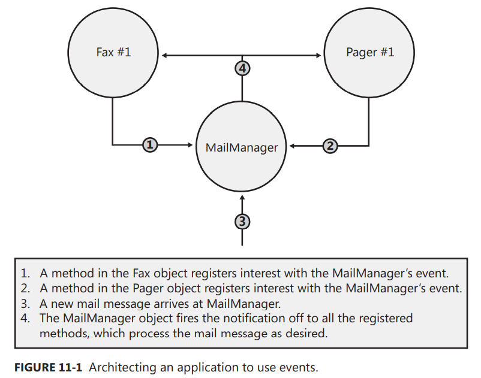

<!DOCTYPE html><html lang="en"><head><meta charset="UTF-8"><meta name="viewport" content="width=device-width,initial-scale=1,maximum-scale=2"><meta name="theme-color" content="#FFF"><link rel="apple-touch-icon" sizes="180x180" href="/images/apple-touch-icon.png"><link rel="icon" type="image/ico" sizes="32x32" href="/images/favicon.ico"><meta http-equiv="Cache-Control" content="no-transform"><meta http-equiv="Cache-Control" content="no-siteapp"><link rel="alternate" type="application/rss+xml" title="Sakupinera" href="http://sakupinera.github.io/rss.xml"><link rel="alternate" type="application/atom+xml" title="Sakupinera" href="http://sakupinera.github.io/atom.xml"><link rel="alternate" type="application/json" title="Sakupinera" href="http://sakupinera.github.io/feed.json"><link rel="stylesheet" href="//fonts.googleapis.com/css?family=Mulish:300,300italic,400,400italic,700,700italic%7CFredericka%20the%20Great:300,300italic,400,400italic,700,700italic%7CNoto%20Serif%20JP:300,300italic,400,400italic,700,700italic%7CNoto%20Serif%20SC:300,300italic,400,400italic,700,700italic%7CInconsolata:300,300italic,400,400italic,700,700italic&display=swap&subset=latin,latin-ext"><link rel="stylesheet" href="/css/app.css?v=0.2.5"><meta name="keywords" content="读书笔记,C#"><link rel="canonical" href="http://sakupinera.github.io/2022/10/29/csharp/clr-via-csharp/Chapter%2011%20Events/"><title>CLR via C# - Chapter 11 Events - CLR-via-CSharp - CSharp | Hanamai Sora = Sakupinera</title><meta name="generator" content="Hexo 5.4.2"></head><body itemscope itemtype="http://schema.org/WebPage"><div id="loading"><div class="cat"><div class="body"></div><div class="head"><div class="face"></div></div><div class="foot"><div class="tummy-end"></div><div class="bottom"></div><div class="legs left"></div><div class="legs right"></div></div><div class="paw"><div class="hands left"></div><div class="hands right"></div></div></div></div><div id="container"><header id="header" itemscope itemtype="http://schema.org/WPHeader"><div class="inner"><div id="brand"><div class="pjax"><h1 itemprop="name headline">CLR via C# - Chapter 11 Events</h1><div class="meta"><span class="item" title="Created: 2022-10-29 00:00:00"><span class="icon"><i class="ic i-calendar"></i> </span><span class="text">Posted on</span> <time itemprop="dateCreated datePublished" datetime="2022-10-29T00:00:00+08:00">2022-10-29</time> </span><span class="item" title="Symbols count in article"><span class="icon"><i class="ic i-pen"></i> </span><span class="text">Symbols count in article</span> <span>29k</span> <span class="text">words</span> </span><span class="item" title="Reading time"><span class="icon"><i class="ic i-clock"></i> </span><span class="text">Reading time</span> <span>26 mins.</span></span></div></div></div><nav id="nav"><div class="inner"><div class="toggle"><div class="lines" aria-label="Toggle navigation bar"><span class="line"></span> <span class="line"></span> <span class="line"></span></div></div><ul class="menu"><li class="item title"><a href="/" rel="start">Hanamai Sora</a></li></ul><ul class="right"><li class="item theme"><i class="ic i-sun"></i></li><li class="item search"><i class="ic i-search"></i></li></ul></div></nav></div><div id="imgs" class="pjax"><ul><li class="item" data-background-image="https://s2.loli.net/2023/03/08/hr2Sybs5CRvjFdI.png"></li><li class="item" data-background-image="https://s2.loli.net/2023/03/08/5rFIQnpK6fEoLOU.png"></li><li class="item" data-background-image="https://s2.loli.net/2023/03/08/vWqdDn4KtmcIXr3.jpg"></li><li class="item" data-background-image="https://s2.loli.net/2023/03/08/Qi9cMFjDZq5V3tB.jpg"></li><li class="item" data-background-image="https://s2.loli.net/2023/03/08/hub7DjxPVYvzoB4.jpg"></li><li class="item" data-background-image="https://s2.loli.net/2023/03/08/tNhsmAqoTDncM1b.jpg"></li></ul></div></header><div id="waves"><svg class="waves" xmlns="http://www.w3.org/2000/svg" xmlns:xlink="http://www.w3.org/1999/xlink" viewBox="0 24 150 28" preserveAspectRatio="none" shape-rendering="auto"><defs><path id="gentle-wave" d="M-160 44c30 0 58-18 88-18s 58 18 88 18 58-18 88-18 58 18 88 18 v44h-352z"/></defs><g class="parallax"><use xlink:href="#gentle-wave" x="48" y="0"/><use xlink:href="#gentle-wave" x="48" y="3"/><use xlink:href="#gentle-wave" x="48" y="5"/><use xlink:href="#gentle-wave" x="48" y="7"/></g></svg></div><main><div class="inner"><div id="main" class="pjax"><div class="article wrap"><div class="breadcrumb" itemscope itemtype="https://schema.org/BreadcrumbList"><i class="ic i-home"></i> <span><a href="/">Home</a></span><i class="ic i-angle-right"></i> <span itemprop="itemListElement" itemscope itemtype="https://schema.org/ListItem"><a href="/categories/CSharp/" itemprop="item" rel="index" title="In CSharp"><span itemprop="name">CSharp</span></a><meta itemprop="position" content="1"></span><i class="ic i-angle-right"></i> <span class="current" itemprop="itemListElement" itemscope itemtype="https://schema.org/ListItem"><a href="/categories/CSharp/CLR-via-CSharp/" itemprop="item" rel="index" title="In CLR-via-CSharp"><span itemprop="name">CLR-via-CSharp</span></a><meta itemprop="position" content="2"></span></div><article itemscope itemtype="http://schema.org/Article" class="post block" lang="en"><link itemprop="mainEntityOfPage" href="http://sakupinera.github.io/2022/10/29/csharp/clr-via-csharp/Chapter%2011%20Events/"><span hidden itemprop="author" itemscope itemtype="http://schema.org/Person"><meta itemprop="image" content="/images/avatar.jpg"><meta itemprop="name" content="Sakupinera"><meta itemprop="description" content=", 保持你的决心！"></span><span hidden itemprop="publisher" itemscope itemtype="http://schema.org/Organization"><meta itemprop="name" content="Sakupinera"></span><div class="body md" itemprop="articleBody"><h1 id="chapter-11-events"><a class="anchor" href="#chapter-11-events">#</a> Chapter 11 Events</h1><blockquote><p>In this chapter, I’ll talk about the last kind of member a type can define: events. A type that defines an event member allows the type (or instances of the type) to notify other objects that something special has happened. For example, the Button class offers an event called Click. When a Button object is clicked, one or more objects in an application may want to receive notification about this event in order to perform some action. Events are type members that allow this interaction. Specifically, defining an event member means that a type is offering the following capabilities:</p></blockquote><ul><li><p>A method can register its interest in the event.</p></li><li><p>A method can unregister its interest in the event.</p></li><li><p>Registered methods will be notified when the event occurs.</p></li></ul><blockquote><p>Types can offer this functionality when defining an event because they maintain a list of the registered methods. When the event occurs, the type notifies all of the registered methods in the collection.</p></blockquote><blockquote><p>The common language runtime’s (CLR’s) event model is based on delegates. A delegate is a typesafe way to invoke a callback method. Callback methods are the means by which objects receive the notifications they subscribed to. In this chapter, I’ll be using delegates, but I won’t fully explain all their details until Chapter 17, “Delegates.”</p></blockquote><blockquote><p>To help you fully understand the way events work within the CLR, I’ll start with a scenario in which events are useful. Suppose you want to design an email application. When an email message arrives, the user might like the message to be forwarded to a fax machine or a pager. In architecting this application, let’s say that you’ll first design a type called MailManager that receives the incoming email messages. MailManager will expose an event called NewMail. Other types (such as Fax and Pager) may register interest in this event. When MailManager receives a new email message, it will raise the event, causing the message to be distributed to each of the registered objects. Each object can process the message in any way it desires.</p></blockquote><blockquote><p>When the application initializes, let’s instantiate just one MailManager instance—the application can then instantiate any number of Fax and Pager types. Figure 11-1 shows how the application initializes and what happens when a new email message arrives.</p></blockquote><p></p><blockquote><p>Here’s how the application illustrated in Figure 11-1 works: the application initializes by constructing an instance of MailManager. MailManager offers a NewMail event. When the Fax and Pager objects are constructed, they register an instance method with MailManager’s NewMail event so that MailManager knows to notify the Fax and Pager objects when new email messages arrive. Now, when MailManager receives a new email message (sometime in the future), it will raise the NewMail event, giving all of the registered methods an opportunity to process the new message in any way they want.</p></blockquote><h2 id="designing-a-type-that-exposes-an-event"><a class="anchor" href="#designing-a-type-that-exposes-an-event">#</a> Designing a Type That Exposes an Event</h2><blockquote><p>There are many steps a developer must take in order to define a type that exposes one or more event members. In this section, I’ll walk through each of the necessary steps. The MailManager sample application (which can be downloaded from the Books section in Resources at <span class="exturl" data-url="aHR0cDovL3dpbnRlbGxlY3QuY29tLw==">http://wintellect.com/</span> Books) shows all of the source code for the MailManager type, the Fax type, and the Pager type. You’ll notice that the Pager type is practically identical to the Fax type.</p></blockquote><h3 id="step-1-define-a-type-that-will-hold-any-additional-information-that-should-be-sent-to-receivers-of-the-event-notification"><a class="anchor" href="#step-1-define-a-type-that-will-hold-any-additional-information-that-should-be-sent-to-receivers-of-the-event-notification">#</a> Step #1: Define a type that will hold any additional information that should be sent to receivers of the event notification</h3><blockquote><p>When an event is raised, the object raising the event may want to pass some additional information to the objects receiving the event notification. This additional information needs to be encapsulated into its own class, which typically contains a bunch of private fields along with some read-only public properties to expose these fields. By convention, classes that hold event information to be passed to the event handler should be derived from System.EventArgs, and the name of the class should be suffixed with EventArgs. In this example, the NewMailEventArgs class has fields identifying who sent the message (m_from), who is receiving the message (m_to), and the subject of the message (m_subject).</p></blockquote><figure class="highlight csharp"><figcaption data-lang="C#"></figcaption><table><tr><td data-num="1"></td><td><pre><span class="token comment">// Step #1: Define a type that will hold any additional information that </span></pre></td></tr><tr><td data-num="2"></td><td><pre><span class="token comment">// should be sent to receivers of the event notification </span></pre></td></tr><tr><td data-num="3"></td><td><pre><span class="token keyword">internal</span> <span class="token keyword">class</span> <span class="token class-name">NewMailEventArgs</span> <span class="token punctuation">:</span> <span class="token type-list"><span class="token class-name">EventArgs</span></span> <span class="token punctuation">&#123;</span> </pre></td></tr><tr><td data-num="4"></td><td><pre> <span class="token keyword">private</span> <span class="token keyword">readonly</span> <span class="token class-name">String</span> m_from<span class="token punctuation">,</span> m_to<span class="token punctuation">,</span> m_subject<span class="token punctuation">;</span> </pre></td></tr><tr><td data-num="5"></td><td><pre> <span class="token keyword">public</span> <span class="token function">NewMailEventArgs</span><span class="token punctuation">(</span><span class="token class-name">String</span> from<span class="token punctuation">,</span> <span class="token class-name">String</span> to<span class="token punctuation">,</span> <span class="token class-name">String</span> subject<span class="token punctuation">)</span> <span class="token punctuation">&#123;</span> </pre></td></tr><tr><td data-num="6"></td><td><pre> m_from <span class="token operator">=</span> from<span class="token punctuation">;</span> m_to <span class="token operator">=</span> to<span class="token punctuation">;</span> m_subject <span class="token operator">=</span> subject<span class="token punctuation">;</span> </pre></td></tr><tr><td data-num="7"></td><td><pre> <span class="token punctuation">&#125;</span> </pre></td></tr><tr><td data-num="8"></td><td><pre> </pre></td></tr><tr><td data-num="9"></td><td><pre> <span class="token keyword">public</span> <span class="token return-type class-name">String</span> From <span class="token punctuation">&#123;</span> <span class="token keyword">get</span> <span class="token punctuation">&#123;</span> <span class="token keyword">return</span> m_from<span class="token punctuation">;</span> <span class="token punctuation">&#125;</span> <span class="token punctuation">&#125;</span> </pre></td></tr><tr><td data-num="10"></td><td><pre> <span class="token keyword">public</span> <span class="token return-type class-name">String</span> To <span class="token punctuation">&#123;</span> <span class="token keyword">get</span> <span class="token punctuation">&#123;</span> <span class="token keyword">return</span> m_to<span class="token punctuation">;</span> <span class="token punctuation">&#125;</span> <span class="token punctuation">&#125;</span> </pre></td></tr><tr><td data-num="11"></td><td><pre> <span class="token keyword">public</span> <span class="token return-type class-name">String</span> Subject <span class="token punctuation">&#123;</span> <span class="token keyword">get</span> <span class="token punctuation">&#123;</span> <span class="token keyword">return</span> m_subject<span class="token punctuation">;</span> <span class="token punctuation">&#125;</span> <span class="token punctuation">&#125;</span> </pre></td></tr><tr><td data-num="12"></td><td><pre><span class="token punctuation">&#125;</span></pre></td></tr></table></figure><p>💡注意： <code>EventArgs</code> 类在 Microsoft .NET Framework 类库 (FCL) 中定义，其实现如下：</p><figure class="highlight csharp"><figcaption data-lang="C#"></figcaption><table><tr><td data-num="1"></td><td><pre><span class="token punctuation">[</span><span class="token attribute"><span class="token class-name">ComVisible</span><span class="token attribute-arguments"><span class="token punctuation">(</span><span class="token boolean">true</span><span class="token punctuation">)</span></span><span class="token punctuation">,</span> <span class="token class-name">Serializable</span></span><span class="token punctuation">]</span></pre></td></tr><tr><td data-num="2"></td><td><pre><span class="token keyword">public</span> <span class="token keyword">class</span> <span class="token class-name">EventArgs</span> <span class="token punctuation">&#123;</span></pre></td></tr><tr><td data-num="3"></td><td><pre>	<span class="token keyword">public</span> <span class="token keyword">static</span> <span class="token keyword">readonly</span> <span class="token class-name">EventArgs</span> Empty <span class="token operator">=</span> <span class="token keyword">new</span> <span class="token constructor-invocation class-name">EventArgs</span><span class="token punctuation">(</span><span class="token punctuation">)</span><span class="token punctuation">;</span></pre></td></tr><tr><td data-num="4"></td><td><pre>	<span class="token keyword">public</span> <span class="token function">EventArgs</span><span class="token punctuation">(</span><span class="token punctuation">)</span> <span class="token punctuation">&#123;</span> <span class="token punctuation">&#125;</span></pre></td></tr><tr><td data-num="5"></td><td><pre><span class="token punctuation">&#125;</span></pre></td></tr></table></figure><p>可以看出，该类型的实现非常简单，就是一个让其他类型继承的基类型。许多事件都没有附加信息需要传递。例如，当一个 <code>Button</code> 向已登记的接收者通知自己被单击时，调用回调方法就可以了。定义不需要传递附加数据的事件时，可直接使用 <code>EventArgs.Empty</code> ，不用构造新的 <code>EventArgs</code> 对象。</p><h3 id="step-2-define-the-event-member"><a class="anchor" href="#step-2-define-the-event-member">#</a> Step #2: Define the event member</h3><blockquote><p>An event member is defined using the C# keyword event. Each event member is given accessibility (which is almost always public so that other code can access the event member), a type of delegate indicating the prototype of the method(s) that will be called, and a name (which can be any valid identifier). Here is what the event member in our MailManager class looks like.</p></blockquote><figure class="highlight csharp"><figcaption data-lang="C#"></figcaption><table><tr><td data-num="1"></td><td><pre><span class="token keyword">internal</span> <span class="token keyword">class</span> <span class="token class-name">MailManager</span> <span class="token punctuation">&#123;</span> </pre></td></tr><tr><td data-num="2"></td><td><pre> <span class="token comment">// Step #2: Define the event member </span></pre></td></tr><tr><td data-num="3"></td><td><pre> <span class="token keyword">public</span> <span class="token keyword">event</span> <span class="token class-name">EventHandler<span class="token punctuation">&lt;</span>NewMailEventArgs<span class="token punctuation">></span></span> NewMail<span class="token punctuation">;</span> </pre></td></tr><tr><td data-num="4"></td><td><pre> <span class="token range operator">..</span><span class="token punctuation">.</span> </pre></td></tr><tr><td data-num="5"></td><td><pre><span class="token punctuation">&#125;</span></pre></td></tr></table></figure><blockquote><p>NewMail is the name of this event. The type of the event member is EventHandler, which means that all receivers of the event notification must supply a callback method whose prototype matches that of the EventHandler delegate type. Because the generic System.EventHandler delegate is defined as follows.</p></blockquote><figure class="highlight csharp"><figcaption data-lang="C#"></figcaption><table><tr><td data-num="1"></td><td><pre><span class="token keyword">public</span> <span class="token keyword">delegate</span> <span class="token return-type class-name"><span class="token keyword">void</span></span> <span class="token generic-method"><span class="token function">EventHandler</span><span class="token generic class-name"><span class="token punctuation">&lt;</span>TEventArgs<span class="token punctuation">></span></span></span><span class="token punctuation">(</span><span class="token class-name">Object</span> sender<span class="token punctuation">,</span> <span class="token class-name">TEventArgs</span> e<span class="token punctuation">)</span><span class="token punctuation">;</span></pre></td></tr></table></figure><blockquote><p>the method prototypes must look like the following.</p></blockquote><figure class="highlight csharp"><figcaption data-lang="C#"></figcaption><table><tr><td data-num="1"></td><td><pre><span class="token return-type class-name"><span class="token keyword">void</span></span> <span class="token function">MethodName</span><span class="token punctuation">(</span><span class="token class-name">Object</span> sender<span class="token punctuation">,</span> <span class="token class-name">NewMailEventArgs</span> e<span class="token punctuation">)</span><span class="token punctuation">;</span></pre></td></tr></table></figure><p>💡注意：许多人奇怪事件模式为什么要求 <code>sender</code> 参数是 <code>Object</code> 类型。毕竟，只有 <code>MailManager</code> 才会引发传递了 <code>NewMailEventArgs</code> 对象的事件，所以回调方法更合适的原型似乎是下面这个：<br><code>void MethodName(MailManager sender, NewMailEventArgs e);</code></p><p>要求 <code>sender</code> 是 <code>Object</code> 主要是因为继承。例如，假定 <code>MailManager</code> 成为 <code>SmtpMailManager</code> 的基类，那么回调方法的 <code>sender</code> 参数应该是 <code>SmtpMailManager</code> 类型而不是 <code>MailManager</code> 类型。但这不可能发生，因为 <code>SmtpMailManager</code> 继承了 <code>NewMail</code> 事件。所以，如果代码需要由 <code>SmtpMailManager</code> 引发事件，还是要将 <code>sender</code> 实参转型为 <code>SmtpMailManager</code> 。反正都要进行类型转换，这和将 <code>sender</code> 定为 <code>Object</code> 类型没什么两样。</p><p>将 <code>sender</code> 参数的类型定为 <code>Object</code> 的另一个原因是灵活性。它使委托能由多个类型使用，只要类型提供了一个会传递 <code>NewMailEventArgs</code> 对象的事件。例如，即使 <code>PopMailManager</code> 类不是从 <code>MailManager</code> 类派生的，也能使用这个委托。</p><p>此外，事件模式要求委托定义和回调方法将派生自 <code>EventArgs</code> 的参数命名为 <code>e</code> 。这个要求唯一的作用就是加强事件模式的一致性，使开发人员更容易学习和实现这个模式。注意，能自动生成源代码的工具 (比如 Microsoft Visual Studio) 也知道将参数命名为 <code>e</code> 。</p><p>最后，事件模式要求所有事件处理程序 &lt;sup&gt;①&lt;/sup &gt; 的返回都是 <code>void</code> 。这很有必要，因为引发事件后可能要调用好几个回调方法，但没办法获得所有方法的返回值。将返回类型定为 <code>void</code> ，就不允许回调 (方法) 返回值。遗憾的是，FCL 中的一些事件处理程序 (比如 <code>ResolveEventHandler</code> ) 没有遵循 Microsoft 自定的模式。例如， <code>ResolveEventHandler</code> 事件处理程序会返回 <code>Assembly</code> 类型的对象。</p><h3 id="step-3-define-a-method-responsible-for-raising-the-event-to-notify-registered-objects-that-the-event-has-occurred"><a class="anchor" href="#step-3-define-a-method-responsible-for-raising-the-event-to-notify-registered-objects-that-the-event-has-occurred">#</a> Step #3: Define a method responsible for raising the event to notify registered objects that the event has occurred</h3><blockquote><p>By convention, the class should define a protected, virtual method that is called by code internally within the class and its derived classes when the event is to be raised. This method takes one parameter, a NewMailEventArgs object, which includes the information passed to the objects receiving the notification. The default implementation of this method simply checks if any objects have registered interest in the event and, if so, the event will be raised, thereby notifying the registered methods that the event has occurred. Here is what the method in our MailManager class looks like.</p></blockquote><figure class="highlight csharp"><figcaption data-lang="C#"></figcaption><table><tr><td data-num="1"></td><td><pre><span class="token keyword">internal</span> <span class="token keyword">class</span> <span class="token class-name">MailManager</span> <span class="token punctuation">&#123;</span> </pre></td></tr><tr><td data-num="2"></td><td><pre> <span class="token range operator">..</span><span class="token punctuation">.</span> </pre></td></tr><tr><td data-num="3"></td><td><pre> <span class="token comment">// Step #3: Define a method responsible for raising the event </span></pre></td></tr><tr><td data-num="4"></td><td><pre> <span class="token comment">// to notify registered objects that the event has occurred </span></pre></td></tr><tr><td data-num="5"></td><td><pre> <span class="token comment">// If this class is sealed, make this method private and nonvirtual </span></pre></td></tr><tr><td data-num="6"></td><td><pre> <span class="token keyword">protected</span> <span class="token keyword">virtual</span> <span class="token return-type class-name"><span class="token keyword">void</span></span> <span class="token function">OnNewMail</span><span class="token punctuation">(</span><span class="token class-name">NewMailEventArgs</span> e<span class="token punctuation">)</span> <span class="token punctuation">&#123;</span> </pre></td></tr><tr><td data-num="7"></td><td><pre> <span class="token comment">// Copy a reference to the delegate field now into a temporary field for thread safety </span></pre></td></tr><tr><td data-num="8"></td><td><pre> <span class="token class-name">EventHandler<span class="token punctuation">&lt;</span>NewMailEventArgs<span class="token punctuation">></span></span> temp <span class="token operator">=</span> Volatile<span class="token punctuation">.</span><span class="token function">Read</span><span class="token punctuation">(</span><span class="token keyword">ref</span> NewMail<span class="token punctuation">)</span><span class="token punctuation">;</span></pre></td></tr><tr><td data-num="9"></td><td><pre> <span class="token comment">// If any methods registered interest with our event, notify them </span></pre></td></tr><tr><td data-num="10"></td><td><pre> <span class="token keyword">if</span> <span class="token punctuation">(</span>temp <span class="token operator">!=</span> <span class="token keyword">null</span><span class="token punctuation">)</span> <span class="token function">temp</span><span class="token punctuation">(</span><span class="token keyword">this</span><span class="token punctuation">,</span> e<span class="token punctuation">)</span><span class="token punctuation">;</span> </pre></td></tr><tr><td data-num="11"></td><td><pre> <span class="token punctuation">&#125;</span> </pre></td></tr><tr><td data-num="12"></td><td><pre> <span class="token range operator">..</span><span class="token punctuation">.</span> </pre></td></tr><tr><td data-num="13"></td><td><pre><span class="token punctuation">&#125;</span></pre></td></tr></table></figure><p><strong>以线程安全的方式引发事件</strong><br>.NET Framework 刚发布时建议开发者用以下方式引发事件：</p><pre><code class="language-C#">// 版本 1 
protected virtual void OnNewMail(NewMailEventArgs e) &#123;
    if (NewNmil != null) NewMail(this, e);
&#125;
</code></pre><p><code>OnNewMail</code> 方法的问题在于，虽然线程检查出 <code>NewMail</code> 不为 <code>null</code> ，但就在调用 <code>NewMail</code> 之前，另一个线程可能从委托链中移除一个委托，使 <code>NewMail</code> 成了 <code>null</code> 。这会抛出 <code>NullReferenceException</code> 异常。为了修正这个竞态问题，许多开发者都像下面这样写 <code>OnNewMail</code> 方法</p><pre><code class="language-C#">// 版本 2
protected virtual void OnNewMail (NewMailEventArgs e) &#123;
    EventHandler&lt;NewMailEventArgs&gt; temp = NewMail;
    if (temp != null)  temp(this, e);
&#125;
</code></pre><p>它的思路是，将对 <code>NewMail</code> 的引用复制到临时变量 <code>temp</code> 中，后者引用赋值发生时的委托链。然后，方法比较 <code>temp</code> 和 <code>null</code> ，并调用 (invoke) <code>temp</code> ；所以，向 <code>temp</code> 赋值后，即使另一个线程更改了 <code>NewMail</code> 也没有关系。委托是不可变的 (immutable)，所以这个技术理论上行的通。但许多多开发者没有意识到的是，编译器可能 “擅作主张”，通过完全移除局部变量 <code>temp</code> 的方式对上述代码进行优化。如果发生这种情况，版本 2 就和版本 1 就没有任何区别。所以，人有可能抛出 <code>NullReferenceException</code> 异常。</p><p>要想整个修正这个问题，应该像下面这样重写 <code>OnNewMail</code> ：</p><pre><code class="language-C#">// 版本 3
protected virtual void OnNewMail(NewMailEventArgs e) &#123;
    EventHandler&lt;NewMailEventArgs&gt; temp = Volatile.Read(ref NewMail);
    if (temp != null) temp(this, e);
&#125;
</code></pre><p>对 <code>Volatile.Read</code> 的调用强迫 <code>NewMail</code> 在这个调用发生时读取，引用真的必须复制到 <code>temp</code> 变量中 (编译器别想走捷径)。然后， <code>temp</code> 变量只有在不为 <code>null</code> 时才会被调用 (invoke)。第 29 章 “基元线程同步构造” 将详细讨论 <code>Volatile.Read</code> 方法。</p><p>虽然最后一个版本很完美，是技术正确的版本，但版本 2 实际也是可以使用的，因为 JIT 编译器理解这个模式，知道自己不该将局部变量 <code>temp</code> “优化” 掉。具体地说，MIcrosoft 的所有 JIT 编译器都 “尊重” 那些不会造成对堆内存的新的读取动作的不变量 (invariant)。所以，在局部变量中缓存一个引用，可确保堆引用只被访问一次。这一点并未在文档中反映，理论上说将来可能改变，这正是为什么应该使用最后一个版本的原因。但实际上，Microsoft 的 JIT 编译器永远没有可能真的进行修改来破坏这个模式，否则太多的应用程序都会 “遭殃”。此外，事件主要在单线程的情形 (WPF 和 Windows Store 应用) 中使用，所以线程安全不是问题。</p><p>还要注意，考虑到线程竞态条件，方法有可能在从事件的委托链中移除之后得到调用。</p><blockquote><p>As a convenience, you could define an extension method (as discussed in Chapter 8, “Methods”) that encapsulates this thread-safety logic. Define the extension method as follows.</p></blockquote><figure class="highlight csharp"><figcaption data-lang="C#"></figcaption><table><tr><td data-num="1"></td><td><pre><span class="token keyword">public</span> <span class="token keyword">static</span> <span class="token keyword">class</span> <span class="token class-name">EventArgExtensions</span> <span class="token punctuation">&#123;</span></pre></td></tr><tr><td data-num="2"></td><td><pre> <span class="token keyword">public</span> <span class="token keyword">static</span> <span class="token return-type class-name"><span class="token keyword">void</span></span> <span class="token generic-method"><span class="token function">Raise</span><span class="token generic class-name"><span class="token punctuation">&lt;</span>TEventArgs<span class="token punctuation">></span></span></span><span class="token punctuation">(</span><span class="token keyword">this</span> <span class="token class-name">TEventArgs</span> e<span class="token punctuation">,</span> </pre></td></tr><tr><td data-num="3"></td><td><pre> <span class="token class-name">Object</span> sender<span class="token punctuation">,</span> <span class="token keyword">ref</span> <span class="token class-name">EventHandler<span class="token punctuation">&lt;</span>TEventArgs<span class="token punctuation">></span></span> eventDelegate<span class="token punctuation">)</span> <span class="token punctuation">&#123;</span></pre></td></tr><tr><td data-num="4"></td><td><pre> <span class="token comment">// Copy a reference to the delegate field now into a temporary field for thread safety </span></pre></td></tr><tr><td data-num="5"></td><td><pre> <span class="token class-name">EventHandler<span class="token punctuation">&lt;</span>TEventArgs<span class="token punctuation">></span></span> temp <span class="token operator">=</span> Volatile<span class="token punctuation">.</span><span class="token function">Read</span><span class="token punctuation">(</span><span class="token keyword">ref</span> eventDelegate<span class="token punctuation">)</span><span class="token punctuation">;</span></pre></td></tr><tr><td data-num="6"></td><td><pre> <span class="token comment">// If any methods registered interest with our event, notify them </span></pre></td></tr><tr><td data-num="7"></td><td><pre> <span class="token keyword">if</span> <span class="token punctuation">(</span>temp <span class="token operator">!=</span> <span class="token keyword">null</span><span class="token punctuation">)</span> <span class="token function">temp</span><span class="token punctuation">(</span>sender<span class="token punctuation">,</span> e<span class="token punctuation">)</span><span class="token punctuation">;</span></pre></td></tr><tr><td data-num="8"></td><td><pre> <span class="token punctuation">&#125;</span></pre></td></tr><tr><td data-num="9"></td><td><pre><span class="token punctuation">&#125;</span></pre></td></tr></table></figure><blockquote><p>And now, we can rewrite the OnNewMail method as follows.</p></blockquote><figure class="highlight csharp"><figcaption data-lang="C#"></figcaption><table><tr><td data-num="1"></td><td><pre><span class="token keyword">protected</span> <span class="token keyword">virtual</span> <span class="token return-type class-name"><span class="token keyword">void</span></span> <span class="token function">OnNewMail</span><span class="token punctuation">(</span><span class="token class-name">NewMailEventArgs</span> e<span class="token punctuation">)</span> <span class="token punctuation">&#123;</span> </pre></td></tr><tr><td data-num="2"></td><td><pre> e<span class="token punctuation">.</span><span class="token function">Raise</span><span class="token punctuation">(</span><span class="token keyword">this</span><span class="token punctuation">,</span> <span class="token keyword">ref</span> m_NewMail<span class="token punctuation">)</span><span class="token punctuation">;</span></pre></td></tr><tr><td data-num="3"></td><td><pre><span class="token punctuation">&#125;</span></pre></td></tr></table></figure><blockquote><p>A class that uses MailManager as a base type is free to override the OnNewMail method. This capability gives the derived class control over the raising of the event. The derived class can handle the new email message in any way it sees fit. Usually, a derived type calls the base type’s OnNewMail method so that the registered method(s) receive the notification. However, the derived class might decide to disallow the event from being forwarded.</p></blockquote><h3 id="step-4-define-a-method-that-translates-the-input-into-the-desired-event"><a class="anchor" href="#step-4-define-a-method-that-translates-the-input-into-the-desired-event">#</a> Step #4: Define a method that translates the input into the desired event</h3><blockquote><p>Your class must have some method that takes some input and translates it into the raising of the event. In my MailManager example, the SimulateNewMail method is called to indicate that a new email message has arrived into MailManager.</p></blockquote><figure class="highlight csharp"><figcaption data-lang="C#"></figcaption><table><tr><td data-num="1"></td><td><pre><span class="token keyword">internal</span> <span class="token keyword">class</span> <span class="token class-name">MailManager</span> <span class="token punctuation">&#123;</span> </pre></td></tr><tr><td data-num="2"></td><td><pre> <span class="token comment">// Step #4: Define a method that translates the </span></pre></td></tr><tr><td data-num="3"></td><td><pre> <span class="token comment">// input into the desired event </span></pre></td></tr><tr><td data-num="4"></td><td><pre> <span class="token keyword">public</span> <span class="token return-type class-name"><span class="token keyword">void</span></span> <span class="token function">SimulateNewMail</span><span class="token punctuation">(</span><span class="token class-name">String</span> from<span class="token punctuation">,</span> <span class="token class-name">String</span> to<span class="token punctuation">,</span> <span class="token class-name">String</span> subject<span class="token punctuation">)</span> <span class="token punctuation">&#123;</span> </pre></td></tr><tr><td data-num="5"></td><td><pre> <span class="token comment">// Construct an object to hold the information we want </span></pre></td></tr><tr><td data-num="6"></td><td><pre> <span class="token comment">// to pass to the receivers of our notification </span></pre></td></tr><tr><td data-num="7"></td><td><pre> <span class="token class-name">NewMailEventArgs</span> e <span class="token operator">=</span> <span class="token keyword">new</span> <span class="token constructor-invocation class-name">NewMailEventArgs</span><span class="token punctuation">(</span>from<span class="token punctuation">,</span> to<span class="token punctuation">,</span> subject<span class="token punctuation">)</span><span class="token punctuation">;</span> </pre></td></tr><tr><td data-num="8"></td><td><pre> <span class="token comment">// Call our virtual method notifying our object that the event </span></pre></td></tr><tr><td data-num="9"></td><td><pre> <span class="token comment">// occurred. If no type overrides this method, our object will </span></pre></td></tr><tr><td data-num="10"></td><td><pre> <span class="token comment">// notify all the objects that registered interest in the event </span></pre></td></tr><tr><td data-num="11"></td><td><pre> <span class="token function">OnNewMail</span><span class="token punctuation">(</span>e<span class="token punctuation">)</span><span class="token punctuation">;</span> </pre></td></tr><tr><td data-num="12"></td><td><pre> <span class="token punctuation">&#125;</span> </pre></td></tr><tr><td data-num="13"></td><td><pre><span class="token punctuation">&#125;</span></pre></td></tr></table></figure><blockquote><p>SimulateNewMail accepts information about the message and constructs a NewMailEventArgs object, passing the message information to its constructor. MailManager’s own virtual OnNewMail method is then called to formally notify the MailManager object of the new email message. Usually, this causes the event to be raised, notifying all of the registered methods. (As mentioned before, a class using MailManager as a base class can override this behavior.)</p></blockquote><p>💡小结：在.NET 程序库中几乎所有和事件相关的定义中，都体现了一个标准的模式。该模式保证了程序库和用户代码使用事件的一致性。第一步：定义类型来容纳所有需要发送给事件通知接收者的附加信息。根据约定，这种类应该从 <code>System.EventArgs</code> 派生，而且类名以 <code>EventArgs</code> 结束。第二步：定义事件成员。事件成员使用 C# 关键字 event 定义。每个事件成员都要指定以下内容：可访问性标识符（几乎肯定是 public，这样其他代码才能访问该事件成员）；委托类型，指出要调用的方法的原型；以及名称（可以是任何有效的标识符）。第三步：定义负责引发事件的方法来通知事件的登记对象。按照约定，类要定义一个受保护的虚方法。引发事件时，类及其派生类中的代码会调用该方法。方法只获取一个参数，即一个 EventArgs 的派生类，其中包含了传给接受通知的对象的消息。方法的默认实现只是检查一下是否有对象登记了对事件的关注。如果有，就引发事件来通知事件的登记对象。一般情况下，派生类会调用基类的 OnXXX 方法，使登记的方法能收到通知。但是，派生类也可以不允许事件转发。第四步：定义方法将输入转化为期望事件。</p><h2 id="how-the-compiler-implements-an-event"><a class="anchor" href="#how-the-compiler-implements-an-event">#</a> How the Compiler Implements an Event</h2><blockquote><p>Now that you know how to define a class that offers an event member, let’s take a closer look at what an event really is and how it works. In the MailManager class, we have a line of code that defines the event member itself.</p></blockquote><figure class="highlight csharp"><figcaption data-lang="C#"></figcaption><table><tr><td data-num="1"></td><td><pre><span class="token keyword">public</span> <span class="token keyword">event</span> <span class="token class-name">EventHandler<span class="token punctuation">&lt;</span>NewMailEventArgs<span class="token punctuation">></span></span> NewMail<span class="token punctuation">;</span></pre></td></tr></table></figure><blockquote><p>When the C# compiler compiles the line above, it translates this single line of source code into the following three constructs.</p></blockquote><figure class="highlight csharp"><figcaption data-lang="C#"></figcaption><table><tr><td data-num="1"></td><td><pre><span class="token comment">// 1. A PRIVATE delegate field that is initialized to null </span></pre></td></tr><tr><td data-num="2"></td><td><pre><span class="token keyword">private</span> <span class="token class-name">EventHandler<span class="token punctuation">&lt;</span>NewMailEventArgs<span class="token punctuation">></span></span> NewMail <span class="token operator">=</span> <span class="token keyword">null</span><span class="token punctuation">;</span> </pre></td></tr><tr><td data-num="3"></td><td><pre><span class="token comment">// 2. A PUBLIC add_Xxx method (where Xxx is the Event name) </span></pre></td></tr><tr><td data-num="4"></td><td><pre><span class="token comment">// Allows methods to register interest in the event. </span></pre></td></tr><tr><td data-num="5"></td><td><pre><span class="token keyword">public</span> <span class="token return-type class-name"><span class="token keyword">void</span></span> <span class="token function">add_NewMail</span><span class="token punctuation">(</span><span class="token class-name">EventHandler<span class="token punctuation">&lt;</span>NewMailEventArgs<span class="token punctuation">></span></span> <span class="token keyword">value</span><span class="token punctuation">)</span> <span class="token punctuation">&#123;</span> </pre></td></tr><tr><td data-num="6"></td><td><pre> <span class="token comment">// The loop and the call to CompareExchange is all just a fancy way </span></pre></td></tr><tr><td data-num="7"></td><td><pre> <span class="token comment">// of adding a delegate to the event in a thread-safe way</span></pre></td></tr><tr><td data-num="8"></td><td><pre> EventHandler<span class="token operator">&lt;</span>NewMailEventArgs<span class="token operator">></span>prevHandler<span class="token punctuation">;</span></pre></td></tr><tr><td data-num="9"></td><td><pre> <span class="token class-name">EventHandler<span class="token punctuation">&lt;</span>NewMailEventArgs<span class="token punctuation">></span></span> newMail <span class="token operator">=</span> <span class="token keyword">this</span><span class="token punctuation">.</span>NewMail<span class="token punctuation">;</span></pre></td></tr><tr><td data-num="10"></td><td><pre> <span class="token keyword">do</span> <span class="token punctuation">&#123;</span></pre></td></tr><tr><td data-num="11"></td><td><pre> prevHandler <span class="token operator">=</span> newMail<span class="token punctuation">;</span></pre></td></tr><tr><td data-num="12"></td><td><pre> <span class="token class-name">EventHandler<span class="token punctuation">&lt;</span>NewMailEventArgs<span class="token punctuation">></span></span> newHandler <span class="token operator">=</span> </pre></td></tr><tr><td data-num="13"></td><td><pre> <span class="token punctuation">(</span>EventHandler<span class="token operator">&lt;</span>NewMailEventArgs<span class="token operator">></span><span class="token punctuation">)</span> Delegate<span class="token punctuation">.</span><span class="token function">Combine</span><span class="token punctuation">(</span>prevHandler<span class="token punctuation">,</span> <span class="token keyword">value</span><span class="token punctuation">)</span><span class="token punctuation">;</span></pre></td></tr><tr><td data-num="14"></td><td><pre> newMail <span class="token operator">=</span> Interlocked<span class="token punctuation">.</span><span class="token generic-method"><span class="token function">CompareExchange</span><span class="token generic class-name"><span class="token punctuation">&lt;</span>EventHandler<span class="token punctuation">&lt;</span>NewMailEventArgs<span class="token punctuation">></span><span class="token punctuation">></span></span></span><span class="token punctuation">(</span></pre></td></tr><tr><td data-num="15"></td><td><pre> <span class="token keyword">ref</span> <span class="token keyword">this</span><span class="token punctuation">.</span>NewMail<span class="token punctuation">,</span> newHandler<span class="token punctuation">,</span> prevHandler<span class="token punctuation">)</span><span class="token punctuation">;</span></pre></td></tr><tr><td data-num="16"></td><td><pre> <span class="token punctuation">&#125;</span> <span class="token keyword">while</span> <span class="token punctuation">(</span>newMail <span class="token operator">!=</span> prevHandler<span class="token punctuation">)</span><span class="token punctuation">;</span></pre></td></tr><tr><td data-num="17"></td><td><pre><span class="token punctuation">&#125;</span> </pre></td></tr><tr><td data-num="18"></td><td><pre><span class="token comment">// 3. A PUBLIC remove_Xxx method (where Xxx is the Event name) </span></pre></td></tr><tr><td data-num="19"></td><td><pre><span class="token comment">// Allows methods to unregister interest in the event. </span></pre></td></tr><tr><td data-num="20"></td><td><pre><span class="token keyword">public</span> <span class="token return-type class-name"><span class="token keyword">void</span></span> <span class="token function">remove_NewMail</span><span class="token punctuation">(</span><span class="token class-name">EventHandler<span class="token punctuation">&lt;</span>NewMailEventArgs<span class="token punctuation">></span></span> <span class="token keyword">value</span><span class="token punctuation">)</span> <span class="token punctuation">&#123;</span> </pre></td></tr><tr><td data-num="21"></td><td><pre> <span class="token comment">// The loop and the call to CompareExchange is all just a fancy way </span></pre></td></tr><tr><td data-num="22"></td><td><pre> <span class="token comment">// of removing a delegate from the event in a thread-safe way</span></pre></td></tr><tr><td data-num="23"></td><td><pre> <span class="token class-name">EventHandler<span class="token punctuation">&lt;</span>NewMailEventArgs<span class="token punctuation">></span></span> prevHandler<span class="token punctuation">;</span></pre></td></tr><tr><td data-num="24"></td><td><pre> <span class="token class-name">EventHandler<span class="token punctuation">&lt;</span>NewMailEventArgs<span class="token punctuation">></span></span> newMail <span class="token operator">=</span> <span class="token keyword">this</span><span class="token punctuation">.</span>NewMail<span class="token punctuation">;</span></pre></td></tr><tr><td data-num="25"></td><td><pre> <span class="token keyword">do</span> <span class="token punctuation">&#123;</span></pre></td></tr><tr><td data-num="26"></td><td><pre> prevHandler <span class="token operator">=</span> newMail<span class="token punctuation">;</span></pre></td></tr><tr><td data-num="27"></td><td><pre> <span class="token class-name">EventHandler<span class="token punctuation">&lt;</span>NewMailEventArgs<span class="token punctuation">></span></span> newHandler <span class="token operator">=</span> </pre></td></tr><tr><td data-num="28"></td><td><pre> <span class="token punctuation">(</span>EventHandler<span class="token operator">&lt;</span>NewMailEventArgs<span class="token operator">></span><span class="token punctuation">)</span> Delegate<span class="token punctuation">.</span><span class="token function">Remove</span><span class="token punctuation">(</span>prevHandler<span class="token punctuation">,</span> <span class="token keyword">value</span><span class="token punctuation">)</span><span class="token punctuation">;</span></pre></td></tr><tr><td data-num="29"></td><td><pre> newMail <span class="token operator">=</span> Interlocked<span class="token punctuation">.</span><span class="token generic-method"><span class="token function">CompareExchange</span><span class="token generic class-name"><span class="token punctuation">&lt;</span>EventHandler<span class="token punctuation">&lt;</span>NewMailEventArgs<span class="token punctuation">></span><span class="token punctuation">></span></span></span><span class="token punctuation">(</span></pre></td></tr><tr><td data-num="30"></td><td><pre> <span class="token keyword">ref</span> <span class="token keyword">this</span><span class="token punctuation">.</span>NewMail<span class="token punctuation">,</span> newHandler<span class="token punctuation">,</span> prevHandler<span class="token punctuation">)</span><span class="token punctuation">;</span></pre></td></tr><tr><td data-num="31"></td><td><pre> <span class="token punctuation">&#125;</span> <span class="token keyword">while</span> <span class="token punctuation">(</span>newMail <span class="token operator">!=</span> prevHandler<span class="token punctuation">)</span><span class="token punctuation">;</span></pre></td></tr><tr><td data-num="32"></td><td><pre><span class="token punctuation">&#125;</span></pre></td></tr></table></figure><blockquote><p>The first construct is simply a field of the appropriate delegate type. This field is a reference to the head of a list of delegates that will be notified when this event occurs. This field is initialized to null, meaning that no listeners have registered interest in the event. When a method registers interest in the event, this field refers to an instance of the EventHandler delegate, which may refer to additional EventHandler delegates. When a listener registers interest in an event, the listener is simply adding an instance of the delegate type to the list. Obviously, unregistering means removing the delegate from the list.</p></blockquote><blockquote><p>You’ll notice that the delegate field, NewMail in this example, is always private even though the original line of source code defines the event as public. The reason for making the delegate field private is to prevent code outside the defining class from manipulating it improperly. If the field were public, any code could alter the value in the field and potentially wipe out all of the delegates that have registered interest in the event.</p></blockquote><blockquote><p>The second construct the C# compiler generates is a method that allows other objects to register their interest in the event. The C# compiler automatically names this function by prepending add_ to the event’s name (NewMail). The C# compiler automatically generates the code that is inside this method. The code always calls System.Delegate’s static Combine method, which adds the instance of a delegate to the list of delegates and returns the new head of the list, which gets saved back in the field.</p></blockquote><blockquote><p>The third construct the C# compiler generates is a method that allows an object to unregister its interest in the event. Again, the C# compiler automatically names this function by prepending remove_ to the event’s name (NewMail). The code inside this method always calls Delegate’s static Remove method, which removes the instance of a delegate from the list of delegates and returns the new head of the list, which gets saved back in the field.</p></blockquote><p>💡警告：试图删除从未添加过的方法， <code>Delegate</code> 的 <code>Remove</code> 方法在内部不做任何事情。也就是说，不会抛出任何异常，也不会显示任何警告；事件的方法集合保持不变。</p><p>💡注意： <code>add</code> 和 <code>remove</code> 方法以线程安全的一种模式更新值。该模式的详情将在 29.3.4 节 “Interlocked Anything 模式” 讨论。</p><blockquote><p>In this example, the add and remove methods are public. The reason they are public is that the original line of source code declared the event to be public. If the event had been declared protected, the add and remove methods generated by the compiler would also have been declared protected. So, when you define an event in a type, the accessibility of the event determines what code can register and unregister interest in the event, but only the type itself can ever access the delegate field directly. Event members can also be declared as static or virtual, in which case the add and remove methods generated by the compiler would be either static or virtual, respectively.</p></blockquote><blockquote><p>In addition to emitting the aforementioned three constructs, compilers also emit an event definition entry into the managed assembly’s metadata. This entry contains some flags and the underlying delegate type, and refers to the add and remove accessor methods. This information exists simply to draw an association between the abstract concept of an “event” and its accessor methods. Compilers and other tools can use this metadata, and this information can also be obtained by using the System.Reflection.EventInfo class. However, the CLR itself doesn’t use this metadata information and requires only the accessor methods at run time.</p></blockquote><p>💡小结：定义了提供事件成员的类之后，C# 编译器编译时会把它转换成 3 个构造。第一个构造是具有恰当委托类型的字段。该字段是对一个委托列表的头部的引用。事件发生时会通知这个列表中的委托。字段初始化为 null，表明无侦听者（listener）登记对该事件的关注。侦听者登记对事件的关注时，只需将委托类型的一个实例添加到列表中。显然，注销（对事件的关注）意味着从列表中移除委托。注意，即使原始代码行将事件定义为 public，委托字段也始终是 private。将委托字段定义为 private，目的是防止类外部的代码不正确地操纵它。如果字段是 public，任何代码都能更改字段中的值，并可能删除已登记了对事件的关注的委托。C# 编译器生成的第二个构造是一个方法，允许其他对象登记对事件的关注。生成的代码总是调用 <code>System.Delegate</code> 的静态 <code>Combine</code> 方法，它将委托实例添加到委托列表中，返回新的列表头（地址），并将这个地址存回字段。C# 编译器生成的第三个构造也是一个方法，允许对象注销对事件的关注。方法中的代码总是调用 <code>Delegate</code> 的静态 <code>Remove</code> 方法，将委托实例从委托列表中删除，返回新的列表头（地址），并将这个地址存回字段。在类型中定义事件时，事件的可访问性决定了什么代码能登记和注销对事件的关注。但无论如何，只有类型本身才能直接访问委托字段。事件成员也可声明为 static 或 virtual。在这种情况下，编译器生成的 add 和 remove 方法分别标记为 static 或 virtual。除了生成上述 3 个构造，编译器还会在托管程序集的元数据中生成一个事件定义记录项。这个记录项包含了一些标志（flag）和基础委托类型（underlying delegate type），还引用了 add 和 remove 访问器方法。这些信息用于建立 “事件” 的抽象概念和它的访问器方法之间的联系。编译器和其他工具可利用这些元数据信息，并可通过 <code>System.Reflection.EventInfo</code> 类获取这些信息。但是，CLR 本身并不使用这些元数据信息，它在运行时只需要访问器方法。</p><h2 id="designing-a-type-that-listens-for-an-event"><a class="anchor" href="#designing-a-type-that-listens-for-an-event">#</a> Designing a Type That Listens for an Event</h2><blockquote><p>The hard work is definitely behind you at this point. In this section, I’ll show you how to define a type that uses an event provided by another type. Let’s start off by examining the code for the Fax type.</p></blockquote><figure class="highlight csharp"><figcaption data-lang="C#"></figcaption><table><tr><td data-num="1"></td><td><pre><span class="token keyword">internal</span> <span class="token keyword">sealed</span> <span class="token keyword">class</span> <span class="token class-name">Fax</span> <span class="token punctuation">&#123;</span> </pre></td></tr><tr><td data-num="2"></td><td><pre> <span class="token comment">// Pass the MailManager object to the constructor </span></pre></td></tr><tr><td data-num="3"></td><td><pre> <span class="token keyword">public</span> <span class="token function">Fax</span><span class="token punctuation">(</span><span class="token class-name">MailManager</span> mm<span class="token punctuation">)</span> <span class="token punctuation">&#123;</span> </pre></td></tr><tr><td data-num="4"></td><td><pre> <span class="token comment">// Construct an instance of the EventHandler&lt;NewMailEventArgs> </span></pre></td></tr><tr><td data-num="5"></td><td><pre> <span class="token comment">// delegate that refers to our FaxMsg callback method. </span></pre></td></tr><tr><td data-num="6"></td><td><pre> <span class="token comment">// Register our callback with MailManager's NewMail event </span></pre></td></tr><tr><td data-num="7"></td><td><pre> mm<span class="token punctuation">.</span>NewMail <span class="token operator">+=</span> FaxMsg<span class="token punctuation">;</span> </pre></td></tr><tr><td data-num="8"></td><td><pre> <span class="token punctuation">&#125;</span> </pre></td></tr><tr><td data-num="9"></td><td><pre> <span class="token comment">// This is the method the MailManager will call </span></pre></td></tr><tr><td data-num="10"></td><td><pre> <span class="token comment">// when a new email message arrives </span></pre></td></tr><tr><td data-num="11"></td><td><pre> <span class="token keyword">private</span> <span class="token return-type class-name"><span class="token keyword">void</span></span> <span class="token function">FaxMsg</span><span class="token punctuation">(</span><span class="token class-name">Object</span> sender<span class="token punctuation">,</span> <span class="token class-name">NewMailEventArgs</span> e<span class="token punctuation">)</span> <span class="token punctuation">&#123;</span> </pre></td></tr><tr><td data-num="12"></td><td><pre> <span class="token comment">// 'sender' identifies the MailManager object in case </span></pre></td></tr><tr><td data-num="13"></td><td><pre> <span class="token comment">// we want to communicate back to it. </span></pre></td></tr><tr><td data-num="14"></td><td><pre> <span class="token comment">// 'e' identifies the additional event information </span></pre></td></tr><tr><td data-num="15"></td><td><pre> <span class="token comment">// the MailManager wants to give us. </span></pre></td></tr><tr><td data-num="16"></td><td><pre> <span class="token comment">// Normally, the code here would fax the email message. </span></pre></td></tr><tr><td data-num="17"></td><td><pre> <span class="token comment">// This test implementation displays the info in the console </span></pre></td></tr><tr><td data-num="18"></td><td><pre> Console<span class="token punctuation">.</span><span class="token function">WriteLine</span><span class="token punctuation">(</span><span class="token string">"Faxing mail message:"</span><span class="token punctuation">)</span><span class="token punctuation">;</span> </pre></td></tr><tr><td data-num="19"></td><td><pre> Console<span class="token punctuation">.</span><span class="token function">WriteLine</span><span class="token punctuation">(</span><span class="token string">" From=&#123;0&#125;, To=&#123;1&#125;, Subject=&#123;2&#125;"</span><span class="token punctuation">,</span> </pre></td></tr><tr><td data-num="20"></td><td><pre> e<span class="token punctuation">.</span>From<span class="token punctuation">,</span> e<span class="token punctuation">.</span>To<span class="token punctuation">,</span> e<span class="token punctuation">.</span>Subject<span class="token punctuation">)</span><span class="token punctuation">;</span> </pre></td></tr><tr><td data-num="21"></td><td><pre> <span class="token punctuation">&#125;</span> </pre></td></tr><tr><td data-num="22"></td><td><pre> <span class="token comment">// This method could be executed to have the Fax object unregister </span></pre></td></tr><tr><td data-num="23"></td><td><pre> <span class="token comment">// itself with the NewMail event so that it no longer receives </span></pre></td></tr><tr><td data-num="24"></td><td><pre> <span class="token comment">// notifications </span></pre></td></tr><tr><td data-num="25"></td><td><pre> <span class="token keyword">public</span> <span class="token return-type class-name"><span class="token keyword">void</span></span> <span class="token function">Unregister</span><span class="token punctuation">(</span><span class="token class-name">MailManager</span> mm<span class="token punctuation">)</span> <span class="token punctuation">&#123;</span> </pre></td></tr><tr><td data-num="26"></td><td><pre> <span class="token comment">// Unregister with MailManager's NewMail event </span></pre></td></tr><tr><td data-num="27"></td><td><pre> mm<span class="token punctuation">.</span>NewMail <span class="token operator">-=</span> FaxMsg<span class="token punctuation">;</span> </pre></td></tr><tr><td data-num="28"></td><td><pre> <span class="token punctuation">&#125;</span> </pre></td></tr><tr><td data-num="29"></td><td><pre><span class="token punctuation">&#125;</span></pre></td></tr></table></figure><blockquote><p>When the email application initializes, it would first construct a MailManager object and save the reference to this object in a variable. Then the application would construct a Fax object, passing the reference to the MailManager object as a parameter. In the Fax constructor, the Fax object registers its interest in MailManager’s NewMail event using C#’s += operator.</p></blockquote><figure class="highlight csharp"><figcaption data-lang="C#"></figcaption><table><tr><td data-num="1"></td><td><pre>mm<span class="token punctuation">.</span>NewMail <span class="token operator">+=</span> FaxMsg<span class="token punctuation">;</span></pre></td></tr></table></figure><blockquote><p>Because the C# compiler has built-in support for events, the compiler translates the use of the += operator into the following line of code to add the object’s interest in the event.</p></blockquote><figure class="highlight csharp"><figcaption data-lang="C#"></figcaption><table><tr><td data-num="1"></td><td><pre>mm<span class="token punctuation">.</span><span class="token function">add_NewMail</span><span class="token punctuation">(</span><span class="token keyword">new</span> <span class="token constructor-invocation class-name">EventHandler<span class="token punctuation">&lt;</span>NewMailEventArgs<span class="token punctuation">></span></span><span class="token punctuation">(</span><span class="token keyword">this</span><span class="token punctuation">.</span>FaxMsg<span class="token punctuation">)</span><span class="token punctuation">)</span><span class="token punctuation">;</span></pre></td></tr></table></figure><blockquote><p>As you can see, the C# compiler is generating code that will construct an EventHandler delegate object that wraps the Fax class’s FaxMsg method. Then, the C# compiler calls the MailManager’s add_NewMail method, passing it the new delegate. Of course, you can verify all of this by compiling the code and looking at the IL with a tool such as ILDasm.exe.</p></blockquote><blockquote><p>Even if you’re using a programming language that doesn’t directly support events, you can still register a delegate with the event by calling the add accessor method explicitly. The effect is identical; the source code will just not look as pretty. It’s the add method that registers the delegate with the event by adding it to the event’s list of delegates.</p></blockquote><blockquote><p>When the MailManager object raises the event, the Fax object’s FaxMsg method gets called. The method is passed a reference to the MailManager object as the first parameter, sender. Most of the time, this parameter is ignored, but it can be used if the Fax object wants to access members of the MailManager object in response to the event notification. The second parameter is a reference to a NewMailEventArgs object. This object contains any additional information the designer of MailManager and NewMailEventArgs thought would be useful to the event receivers.</p></blockquote><blockquote><p>From the NewMailEventArgs object, the FaxMsg method has easy access to the message’s sender, the message’s recipient, and the message’s subject. In a real Fax object, this information would be faxed somewhere. In this example, the information is simply displayed in the console window.</p></blockquote><blockquote><p>When an object is no longer interested in receiving event notifications, it should unregister its interest. For example, the Fax object would unregister its interest in the NewMail event if the user no longer wanted his or her email forwarded to a fax. As long as an object has registered one of its methods with an event, the object can’t be garbage collected. If your type implements IDisposable’s Dispose method, the implementation should cause it to unregister interest in all events. (See Chapter 21, “The Managed Heap and Garbage Collection,” for more information about IDisposable.)</p></blockquote><blockquote><p>Code that demonstrates how to unregister for an event is shown in Fax’s Unregister method. This method is practically identical to the code shown in the Fax constructor. The only difference is that this code uses -= instead of +=. When the C# compiler sees code using the -= operator to unregister a delegate with an event, the compiler emits a call to the event’s remove method</p></blockquote><figure class="highlight csharp"><figcaption data-lang="C#"></figcaption><table><tr><td data-num="1"></td><td><pre>mm<span class="token punctuation">.</span><span class="token function">remove_NewMail</span><span class="token punctuation">(</span><span class="token keyword">new</span> <span class="token constructor-invocation class-name">EventHandler<span class="token punctuation">&lt;</span>NewMailEventArgs<span class="token punctuation">></span></span><span class="token punctuation">(</span>FaxMsg<span class="token punctuation">)</span><span class="token punctuation">)</span><span class="token punctuation">;</span></pre></td></tr></table></figure><blockquote><p>As with the += operator, even if you’re using a programming language that doesn’t directly support events, you can still unregister a delegate with the event by calling the remove accessor method explicitly. The remove method unregisters the delegate from the event by scanning the list for a delegate that wraps the same method as the one passed in. If a match is found, the existing delegate is removed from the event’s list of delegates. If a match isn’t found, no error occurs, and the list is unaltered.</p></blockquote><blockquote><p>By the way, C# requires your code to use the += and -= operators to add and remove delegates from the list. If you try to call the add or remove method explicitly, the C# compiler produces the CS0571 cannot explicitly call operator or accessor error message.</p></blockquote><p>💡小结：C# 编译器内建了对事件的支持，会将 += 操作符翻译成具体代码来添加对象对事件的关注。即使使用的编程语言不直接支持事件，也可显式调用 add 访问器方法向事件登记委托。两者效果一样，最终都是用 add 访问器将委托添加到事件的委托列表中，从而完成委托向事件的登记。对象不再希望接收事件通知时，应注销对事件的关注。对象只要向事件登记了一个方法，便不能被垃圾回收。所以，如果你的类型要实现 <code>IDisposable</code> 和 <code>Dispose</code> 方法，就应该在实现中注销对所有事件的关注。和 += 操作符一样，即使编程语言不直接支持事件，也可显示调用 remove 访问器方法向事件注销委托。remove 方法为了向事件注销委托，需要扫描委托列表来寻找一个恰当的委托（其中包装的方法和传递的方法相同）。找到匹配，现有委托会从事件的委托列表中删除。没有找到也不会报错，列表不发生任何变动。C# 要求代码使用 += 和 -= 操作符在列表中增删委托。如果显式调用 add 和 remove 方法，C# 编译器会报告以下错误消息：CS0571：无法显式调用运算符或访问器。</p><h2 id="explicitly-implementing-an-event"><a class="anchor" href="#explicitly-implementing-an-event">#</a> Explicitly Implementing an Event</h2><blockquote><p>The System.Windows.Forms.Control type defines about 70 events. If the Control type implemented the events by allowing the compiler to implicitly generate the add and remove accessor methods and delegate fields, every Control object would have 70 delegate fields in it just for the events! Because most programmers care about just a few events, an enormous amount of memory would be wasted for each object created from a Control-derived type. By the way, the <span class="exturl" data-url="aHR0cDovL0FTUC5ORVQ=">ASP.NET</span> System.Web.UI.Control and the Windows Presentation Foundation (WPF) System.Windows.UIElement type also offer many events that most programmers do not use.</p></blockquote><blockquote><p>In this section, I discuss how the C# compiler allows a class developer to explicitly implement an event, allowing the developer to control how the add and remove methods manipulate the callback delegates. I’m going to demonstrate how explicitly implementing an event can be used to efficiently implement a class that offers many events. However, there are certainly other scenarios where you might want to explicitly implement a type’s event.</p></blockquote><blockquote><p>To efficiently store event delegates, each object that exposes events will maintain a collection (usually a dictionary) with some sort of event identifier as the key and a delegate list as the value. When a new object is constructed, this collection is empty. When interest in an event is registered, the event’s identifier is looked up in the collection. If the event identifier is there, the new delegate is combined with the list of delegates for this event. If the event identifier isn’t in the collection, the event identifier is added with the delegate.</p></blockquote><blockquote><p>When the object needs to raise an event, the event identifier is looked up in the collection. If the collection doesn’t have an entry for the event identifier, nothing has registered interest in the event and no delegates need to be called back. If the event identifier is in the collection, the delegate list associated with the event identifier is invoked. Implementing this design pattern is the responsibility of the developer who is designing the type that defines the events; the developer using the type has no idea how the events are implemented internally.</p></blockquote><blockquote><p>Here is an example of how you could accomplish this pattern. First, I implemented an EventSet class that represents a collection of events and each event’s delegate list as follows.</p></blockquote><figure class="highlight csharp"><figcaption data-lang="C#"></figcaption><table><tr><td data-num="1"></td><td><pre><span class="token keyword">using</span> <span class="token namespace">System</span><span class="token punctuation">;</span></pre></td></tr><tr><td data-num="2"></td><td><pre><span class="token keyword">using</span> <span class="token namespace">System<span class="token punctuation">.</span>Collections<span class="token punctuation">.</span>Generic</span><span class="token punctuation">;</span></pre></td></tr><tr><td data-num="3"></td><td><pre><span class="token comment">// This class exists to provide a bit more type safety and </span></pre></td></tr><tr><td data-num="4"></td><td><pre><span class="token comment">// code maintainability when using EventSet</span></pre></td></tr><tr><td data-num="5"></td><td><pre><span class="token keyword">public</span> <span class="token keyword">sealed</span> <span class="token keyword">class</span> <span class="token class-name">EventKey</span> <span class="token punctuation">&#123;</span> <span class="token punctuation">&#125;</span></pre></td></tr><tr><td data-num="6"></td><td><pre><span class="token keyword">public</span> <span class="token keyword">sealed</span> <span class="token keyword">class</span> <span class="token class-name">EventSet</span> <span class="token punctuation">&#123;</span></pre></td></tr><tr><td data-num="7"></td><td><pre> <span class="token comment">// The private dictionary used to maintain EventKey -> Delegate mappings</span></pre></td></tr><tr><td data-num="8"></td><td><pre><span class="token keyword">private</span> <span class="token keyword">readonly</span> <span class="token class-name">Dictionary<span class="token punctuation">&lt;</span>EventKey<span class="token punctuation">,</span> Delegate<span class="token punctuation">></span></span> m_events <span class="token operator">=</span></pre></td></tr><tr><td data-num="9"></td><td><pre> <span class="token keyword">new</span> <span class="token constructor-invocation class-name">Dictionary<span class="token punctuation">&lt;</span>EventKey<span class="token punctuation">,</span> Delegate<span class="token punctuation">></span></span><span class="token punctuation">(</span><span class="token punctuation">)</span><span class="token punctuation">;</span></pre></td></tr><tr><td data-num="10"></td><td><pre><span class="token comment">// Adds an EventKey -> Delegate mapping if it doesn't exist or </span></pre></td></tr><tr><td data-num="11"></td><td><pre><span class="token comment">// combines a delegate to an existing EventKey</span></pre></td></tr><tr><td data-num="12"></td><td><pre><span class="token keyword">public</span> <span class="token return-type class-name"><span class="token keyword">void</span></span> <span class="token function">Add</span><span class="token punctuation">(</span><span class="token class-name">EventKey</span> eventKey<span class="token punctuation">,</span> <span class="token class-name">Delegate</span> handler<span class="token punctuation">)</span> <span class="token punctuation">&#123;</span></pre></td></tr><tr><td data-num="13"></td><td><pre> Monitor<span class="token punctuation">.</span><span class="token function">Enter</span><span class="token punctuation">(</span>m_events<span class="token punctuation">)</span><span class="token punctuation">;</span></pre></td></tr><tr><td data-num="14"></td><td><pre> <span class="token class-name">Delegate</span> d<span class="token punctuation">;</span></pre></td></tr><tr><td data-num="15"></td><td><pre> m_events<span class="token punctuation">.</span><span class="token function">TryGetValue</span><span class="token punctuation">(</span>eventKey<span class="token punctuation">,</span> <span class="token keyword">out</span> d<span class="token punctuation">)</span><span class="token punctuation">;</span></pre></td></tr><tr><td data-num="16"></td><td><pre> m_events<span class="token punctuation">[</span>eventKey<span class="token punctuation">]</span> <span class="token operator">=</span> Delegate<span class="token punctuation">.</span><span class="token function">Combine</span><span class="token punctuation">(</span>d<span class="token punctuation">,</span> handler<span class="token punctuation">)</span><span class="token punctuation">;</span></pre></td></tr><tr><td data-num="17"></td><td><pre> Monitor<span class="token punctuation">.</span><span class="token function">Exit</span><span class="token punctuation">(</span>m_events<span class="token punctuation">)</span><span class="token punctuation">;</span></pre></td></tr><tr><td data-num="18"></td><td><pre><span class="token punctuation">&#125;</span></pre></td></tr><tr><td data-num="19"></td><td><pre><span class="token comment">// Removes a delegate from an EventKey (if it exists) and </span></pre></td></tr><tr><td data-num="20"></td><td><pre><span class="token comment">// removes the EventKey -> Delegate mapping the last delegate is removed</span></pre></td></tr><tr><td data-num="21"></td><td><pre><span class="token keyword">public</span> <span class="token return-type class-name"><span class="token keyword">void</span></span> <span class="token function">Remove</span><span class="token punctuation">(</span><span class="token class-name">EventKey</span> eventKey<span class="token punctuation">,</span> <span class="token class-name">Delegate</span> handler<span class="token punctuation">)</span> <span class="token punctuation">&#123;</span></pre></td></tr><tr><td data-num="22"></td><td><pre> Monitor<span class="token punctuation">.</span><span class="token function">Enter</span><span class="token punctuation">(</span>m_events<span class="token punctuation">)</span><span class="token punctuation">;</span></pre></td></tr><tr><td data-num="23"></td><td><pre> <span class="token comment">// Call TryGetValue to ensure that an exception is not thrown if</span></pre></td></tr><tr><td data-num="24"></td><td><pre> <span class="token comment">// attempting to remove a delegate from an EventKey not in the set</span></pre></td></tr><tr><td data-num="25"></td><td><pre> <span class="token class-name">Delegate</span> d<span class="token punctuation">;</span></pre></td></tr><tr><td data-num="26"></td><td><pre> <span class="token keyword">if</span> <span class="token punctuation">(</span>m_events<span class="token punctuation">.</span><span class="token function">TryGetValue</span><span class="token punctuation">(</span>eventKey<span class="token punctuation">,</span> <span class="token keyword">out</span> d<span class="token punctuation">)</span><span class="token punctuation">)</span> <span class="token punctuation">&#123;</span></pre></td></tr><tr><td data-num="27"></td><td><pre> d <span class="token operator">=</span> Delegate<span class="token punctuation">.</span><span class="token function">Remove</span><span class="token punctuation">(</span>d<span class="token punctuation">,</span> handler<span class="token punctuation">)</span><span class="token punctuation">;</span></pre></td></tr><tr><td data-num="28"></td><td><pre> <span class="token comment">// If a delegate remains, set the new head else remove the EventKey</span></pre></td></tr><tr><td data-num="29"></td><td><pre> <span class="token keyword">if</span> <span class="token punctuation">(</span>d <span class="token operator">!=</span> <span class="token keyword">null</span><span class="token punctuation">)</span> m_events<span class="token punctuation">[</span>eventKey<span class="token punctuation">]</span> <span class="token operator">=</span> d<span class="token punctuation">;</span></pre></td></tr><tr><td data-num="30"></td><td><pre> <span class="token keyword">else</span> m_events<span class="token punctuation">.</span><span class="token function">Remove</span><span class="token punctuation">(</span>eventKey<span class="token punctuation">)</span><span class="token punctuation">;</span></pre></td></tr><tr><td data-num="31"></td><td><pre> <span class="token punctuation">&#125;</span></pre></td></tr><tr><td data-num="32"></td><td><pre> Monitor<span class="token punctuation">.</span><span class="token function">Exit</span><span class="token punctuation">(</span>m_events<span class="token punctuation">)</span><span class="token punctuation">;</span></pre></td></tr><tr><td data-num="33"></td><td><pre><span class="token punctuation">&#125;</span></pre></td></tr><tr><td data-num="34"></td><td><pre><span class="token comment">// Raises the event for the indicated EventKey</span></pre></td></tr><tr><td data-num="35"></td><td><pre><span class="token keyword">public</span> <span class="token return-type class-name"><span class="token keyword">void</span></span> <span class="token function">Raise</span><span class="token punctuation">(</span><span class="token class-name">EventKey</span> eventKey<span class="token punctuation">,</span> <span class="token class-name">Object</span> sender<span class="token punctuation">,</span> <span class="token class-name">EventArgs</span> e<span class="token punctuation">)</span> <span class="token punctuation">&#123;</span></pre></td></tr><tr><td data-num="36"></td><td><pre> <span class="token comment">// Don't throw an exception if the EventKey is not in the set</span></pre></td></tr><tr><td data-num="37"></td><td><pre> <span class="token class-name">Delegate</span> d<span class="token punctuation">;</span></pre></td></tr><tr><td data-num="38"></td><td><pre> Monitor<span class="token punctuation">.</span><span class="token function">Enter</span><span class="token punctuation">(</span>m_events<span class="token punctuation">)</span><span class="token punctuation">;</span></pre></td></tr><tr><td data-num="39"></td><td><pre> m_events<span class="token punctuation">.</span><span class="token function">TryGetValue</span><span class="token punctuation">(</span>eventKey<span class="token punctuation">,</span> <span class="token keyword">out</span> d<span class="token punctuation">)</span><span class="token punctuation">;</span></pre></td></tr><tr><td data-num="40"></td><td><pre> Monitor<span class="token punctuation">.</span><span class="token function">Exit</span><span class="token punctuation">(</span>m_events<span class="token punctuation">)</span><span class="token punctuation">;</span></pre></td></tr><tr><td data-num="41"></td><td><pre> <span class="token keyword">if</span> <span class="token punctuation">(</span>d <span class="token operator">!=</span> <span class="token keyword">null</span><span class="token punctuation">)</span> <span class="token punctuation">&#123;</span></pre></td></tr><tr><td data-num="42"></td><td><pre> <span class="token comment">// Because the dictionary can contain several different delegate types,</span></pre></td></tr><tr><td data-num="43"></td><td><pre> <span class="token comment">// it is impossible to construct a type-safe call to the delegate at </span></pre></td></tr><tr><td data-num="44"></td><td><pre> <span class="token comment">// compile time. So, I call the System.Delegate type's DynamicInvoke </span></pre></td></tr><tr><td data-num="45"></td><td><pre> <span class="token comment">// method, passing it the callback method's parameters as an array of </span></pre></td></tr><tr><td data-num="46"></td><td><pre> <span class="token comment">// objects. Internally, DynamicInvoke will check the type safety of the </span></pre></td></tr><tr><td data-num="47"></td><td><pre> <span class="token comment">// parameters with the callback method being called and call the method.</span></pre></td></tr><tr><td data-num="48"></td><td><pre> <span class="token comment">// If there is a type mismatch, then DynamicInvoke will throw an exception.</span></pre></td></tr><tr><td data-num="49"></td><td><pre> d<span class="token punctuation">.</span><span class="token function">DynamicInvoke</span><span class="token punctuation">(</span><span class="token keyword">new</span> <span class="token constructor-invocation class-name">Object<span class="token punctuation">[</span><span class="token punctuation">]</span></span> <span class="token punctuation">&#123;</span> sender<span class="token punctuation">,</span> e <span class="token punctuation">&#125;</span><span class="token punctuation">)</span><span class="token punctuation">;</span></pre></td></tr><tr><td data-num="50"></td><td><pre> <span class="token punctuation">&#125;</span></pre></td></tr><tr><td data-num="51"></td><td><pre> <span class="token punctuation">&#125;</span></pre></td></tr></table></figure><p>💡Note : The FCL defines a type, System.Windows.EventHandlersStore, which does essentially the same thing as my EventSet class. Various WPF types use the EventHandlersStore type internally to maintain their sparse set of events. You’re certainly welcome to use the FCL’s EventHandlersStore type if you’d like. The big difference between the EventHandlersStore type and my EventSet type is that EventHandlersStore doesn’t offer any thread-safe way to access the events; you would have to implement your own thread-safe wrapper around the EventHandlersStore collection if you need to do this.</p><blockquote><p>Now, I show a class that uses my EventSet class. This class has a field that refers to an EventSet object, and each of this class’s events is explicitly implemented so that each event’s add method stores the specified callback delegate in the EventSet object and each event’s remove method eliminates the specified callback delegate (if found).</p></blockquote><figure class="highlight csharp"><figcaption data-lang="C#"></figcaption><table><tr><td data-num="1"></td><td><pre><span class="token keyword">using</span> <span class="token namespace">System</span><span class="token punctuation">;</span></pre></td></tr><tr><td data-num="2"></td><td><pre><span class="token comment">// Define the EventArgs-derived type for this event.</span></pre></td></tr><tr><td data-num="3"></td><td><pre><span class="token keyword">public</span> <span class="token keyword">class</span> <span class="token class-name">FooEventArgs</span> <span class="token punctuation">:</span> <span class="token type-list"><span class="token class-name">EventArgs</span></span> <span class="token punctuation">&#123;</span> <span class="token punctuation">&#125;</span></pre></td></tr><tr><td data-num="4"></td><td><pre><span class="token keyword">public</span> <span class="token keyword">class</span> <span class="token class-name">TypeWithLotsOfEvents</span> <span class="token punctuation">&#123;</span></pre></td></tr><tr><td data-num="5"></td><td><pre> <span class="token comment">// Define a private instance field that references a collection.</span></pre></td></tr><tr><td data-num="6"></td><td><pre> <span class="token comment">// The collection manages a set of Event/Delegate pairs.</span></pre></td></tr><tr><td data-num="7"></td><td><pre> <span class="token comment">// NOTE: The EventSet type is not part of the FCL, it is my own type.</span></pre></td></tr><tr><td data-num="8"></td><td><pre> <span class="token keyword">private</span> <span class="token keyword">readonly</span> <span class="token class-name">EventSet</span> m_eventSet <span class="token operator">=</span> <span class="token keyword">new</span> <span class="token constructor-invocation class-name">EventSet</span><span class="token punctuation">(</span><span class="token punctuation">)</span><span class="token punctuation">;</span></pre></td></tr><tr><td data-num="9"></td><td><pre> <span class="token comment">// The protected property allows derived types access to the collection.</span></pre></td></tr><tr><td data-num="10"></td><td><pre> <span class="token keyword">protected</span> <span class="token return-type class-name">EventSet</span> EventSet <span class="token punctuation">&#123;</span> <span class="token keyword">get</span> <span class="token punctuation">&#123;</span> <span class="token keyword">return</span> m_eventSet<span class="token punctuation">;</span> <span class="token punctuation">&#125;</span> <span class="token punctuation">&#125;</span></pre></td></tr><tr><td data-num="11"></td><td><pre> <span class="token preprocessor property">#<span class="token directive keyword">region</span> Code to support the Foo event (repeat this pattern for additional events)</span></pre></td></tr><tr><td data-num="12"></td><td><pre> <span class="token comment">// Define the members necessary for the Foo event.</span></pre></td></tr><tr><td data-num="13"></td><td><pre> <span class="token comment">// 2a. Construct a static, read-only object to identify this event.</span></pre></td></tr><tr><td data-num="14"></td><td><pre> <span class="token comment">// Each object has its own hash code for looking up this</span></pre></td></tr><tr><td data-num="15"></td><td><pre> <span class="token comment">// event's delegate linked list in the object's collection.</span></pre></td></tr><tr><td data-num="16"></td><td><pre> <span class="token keyword">protected</span> <span class="token keyword">static</span> <span class="token keyword">readonly</span> <span class="token class-name">EventKey</span> s_fooEventKey <span class="token operator">=</span> <span class="token keyword">new</span> <span class="token constructor-invocation class-name">EventKey</span><span class="token punctuation">(</span><span class="token punctuation">)</span><span class="token punctuation">;</span></pre></td></tr><tr><td data-num="17"></td><td><pre> <span class="token comment">// 2b. Define the event's accessor methods that add/remove the</span></pre></td></tr><tr><td data-num="18"></td><td><pre> <span class="token comment">// delegate from the collection.</span></pre></td></tr><tr><td data-num="19"></td><td><pre> <span class="token keyword">public</span> <span class="token keyword">event</span> <span class="token return-type class-name">EventHandler<span class="token punctuation">&lt;</span>FooEventArgs<span class="token punctuation">></span></span> Foo <span class="token punctuation">&#123;</span></pre></td></tr><tr><td data-num="20"></td><td><pre> <span class="token keyword">add</span> <span class="token punctuation">&#123;</span> m_eventSet<span class="token punctuation">.</span><span class="token function">Add</span><span class="token punctuation">(</span>s_fooEventKey<span class="token punctuation">,</span> <span class="token keyword">value</span><span class="token punctuation">)</span><span class="token punctuation">;</span> <span class="token punctuation">&#125;</span></pre></td></tr><tr><td data-num="21"></td><td><pre> <span class="token keyword">remove</span> <span class="token punctuation">&#123;</span> m_eventSet<span class="token punctuation">.</span><span class="token function">Remove</span><span class="token punctuation">(</span>s_fooEventKey<span class="token punctuation">,</span> <span class="token keyword">value</span><span class="token punctuation">)</span><span class="token punctuation">;</span> <span class="token punctuation">&#125;</span></pre></td></tr><tr><td data-num="22"></td><td><pre> <span class="token punctuation">&#125;</span></pre></td></tr><tr><td data-num="23"></td><td><pre> <span class="token comment">// 2c. Define the protected, virtual On method for this event.</span></pre></td></tr><tr><td data-num="24"></td><td><pre> <span class="token keyword">protected</span> <span class="token keyword">virtual</span> <span class="token return-type class-name"><span class="token keyword">void</span></span> <span class="token function">OnFoo</span><span class="token punctuation">(</span><span class="token class-name">FooEventArgs</span> e<span class="token punctuation">)</span> <span class="token punctuation">&#123;</span></pre></td></tr><tr><td data-num="25"></td><td><pre> m_eventSet<span class="token punctuation">.</span><span class="token function">Raise</span><span class="token punctuation">(</span>s_fooEventKey<span class="token punctuation">,</span> <span class="token keyword">this</span><span class="token punctuation">,</span> e<span class="token punctuation">)</span><span class="token punctuation">;</span></pre></td></tr><tr><td data-num="26"></td><td><pre> <span class="token punctuation">&#125;</span></pre></td></tr><tr><td data-num="27"></td><td><pre> <span class="token comment">// 2d. Define the method that translates input to this event.</span></pre></td></tr><tr><td data-num="28"></td><td><pre> <span class="token keyword">public</span> <span class="token return-type class-name"><span class="token keyword">void</span></span> <span class="token function">SimulateFoo</span><span class="token punctuation">(</span><span class="token punctuation">)</span> <span class="token punctuation">&#123;</span> <span class="token function">OnFoo</span><span class="token punctuation">(</span><span class="token keyword">new</span> <span class="token constructor-invocation class-name">FooEventArgs</span><span class="token punctuation">(</span><span class="token punctuation">)</span><span class="token punctuation">)</span><span class="token punctuation">;</span> <span class="token punctuation">&#125;</span></pre></td></tr><tr><td data-num="29"></td><td><pre> <span class="token preprocessor property">#<span class="token directive keyword">endregion</span></span></pre></td></tr><tr><td data-num="30"></td><td><pre><span class="token punctuation">&#125;</span></pre></td></tr></table></figure><blockquote><p>Code that uses the TypeWithLotsOfEvents type can’t tell whether the events have been implemented implicitly by the compiler or explicitly by the developer. They just register the events by using normal syntax. Here is some code demonstrating this.</p></blockquote><figure class="highlight csharp"><figcaption data-lang="C#"></figcaption><table><tr><td data-num="1"></td><td><pre><span class="token keyword">public</span> <span class="token keyword">sealed</span> <span class="token keyword">class</span> <span class="token class-name">Program</span> <span class="token punctuation">&#123;</span></pre></td></tr><tr><td data-num="2"></td><td><pre> <span class="token keyword">public</span> <span class="token keyword">static</span> <span class="token return-type class-name"><span class="token keyword">void</span></span> <span class="token function">Main</span><span class="token punctuation">(</span><span class="token punctuation">)</span> <span class="token punctuation">&#123;</span></pre></td></tr><tr><td data-num="3"></td><td><pre> <span class="token class-name">TypeWithLotsOfEvents</span> twle <span class="token operator">=</span> <span class="token keyword">new</span> <span class="token constructor-invocation class-name">TypeWithLotsOfEvents</span><span class="token punctuation">(</span><span class="token punctuation">)</span><span class="token punctuation">;</span></pre></td></tr><tr><td data-num="4"></td><td><pre> <span class="token comment">// Add a callback here</span></pre></td></tr><tr><td data-num="5"></td><td><pre> twle<span class="token punctuation">.</span>Foo <span class="token operator">+=</span> HandleFooEvent<span class="token punctuation">;</span></pre></td></tr><tr><td data-num="6"></td><td><pre> <span class="token comment">// Prove that it worked</span></pre></td></tr><tr><td data-num="7"></td><td><pre> twle<span class="token punctuation">.</span><span class="token function">SimulateFoo</span><span class="token punctuation">(</span><span class="token punctuation">)</span><span class="token punctuation">;</span></pre></td></tr><tr><td data-num="8"></td><td><pre> <span class="token punctuation">&#125;</span></pre></td></tr><tr><td data-num="9"></td><td><pre> <span class="token keyword">private</span> <span class="token keyword">static</span> <span class="token return-type class-name"><span class="token keyword">void</span></span> <span class="token function">HandleFooEvent</span><span class="token punctuation">(</span><span class="token class-name"><span class="token keyword">object</span></span> sender<span class="token punctuation">,</span> <span class="token class-name">FooEventArgs</span> e<span class="token punctuation">)</span> <span class="token punctuation">&#123;</span></pre></td></tr><tr><td data-num="10"></td><td><pre> Console<span class="token punctuation">.</span><span class="token function">WriteLine</span><span class="token punctuation">(</span><span class="token string">"Handling Foo Event here..."</span><span class="token punctuation">)</span><span class="token punctuation">;</span></pre></td></tr><tr><td data-num="11"></td><td><pre> <span class="token punctuation">&#125;</span></pre></td></tr><tr><td data-num="12"></td><td><pre><span class="token punctuation">&#125;</span></pre></td></tr></table></figure><p>💡小结： <code>System.Windows.Forms.Control</code> 类型定义了大约 70 个事件。假如 Control 类型在实现事件时，允许编译器隐式生成 add 和 remove 访问器方法以及委托字段，那么每个 Control 对象仅为事件就要准备 70 个委托字段。由于大多数程序员只关心少数几个事件，所以每个从 <code>Control</code> 派生类型创建的对象都要浪费大量内存。因此，本节讨论了 C# 编译器如何如何允许类的开发人员显式实现一个事件，使开发人员能够控制 add 和 remove 方法处理回调委托的方法，并演示了如何通过显式实现事件来高效率地实现提供了大量事件的类。为了高效率存储事件委托，公开了事件的每个对象都要维护一个集合（通常时字典）。集合将某种形式的事件标识符作为键（key），将委托列表作为值（value）。使用 <code>TypeWithLotsOfEvents</code> 类型的代码不知道事件是由编译器隐式实现，还是由开发人员显式实现。它们只需要标准的语法向事件登记即可。</p><div class="tags"><a href="/tags/%E8%AF%BB%E4%B9%A6%E7%AC%94%E8%AE%B0/" rel="tag"><i class="ic i-tag"></i> 读书笔记</a> <a href="/tags/C/" rel="tag"><i class="ic i-tag"></i> C#</a></div></div><footer><div class="meta"><span class="item"><span class="icon"><i class="ic i-calendar-check"></i> </span><span class="text">Edited on</span> <time title="Modified: 2022-10-31 23:21:27" itemprop="dateModified" datetime="2022-10-31T23:21:27+08:00">2022-10-31</time></span></div><div class="reward"><button><i class="ic i-heartbeat"></i> Donate</button><p>Give me a cup of [coffee]~(￣▽￣)~*</p><div id="qr"><div><p>WeChat Pay</p></div><div><p>Alipay</p></div><div><p>PayPal</p></div></div></div><div id="copyright"><ul><li class="author"><strong>Post author: </strong>Sakupinera <i class="ic i-at"><em>@</em></i>Sakupinera</li><li class="link"><strong>Post link: </strong><a href="http://sakupinera.github.io/2022/10/29/csharp/clr-via-csharp/Chapter%2011%20Events/" title="CLR via C# - Chapter 11 Events">http://sakupinera.github.io/2022/10/29/csharp/clr-via-csharp/Chapter 11 Events/</a></li><li class="license"><strong>Copyright Notice: </strong>All articles in this blog are licensed under <span class="exturl" data-url="aHR0cHM6Ly9jcmVhdGl2ZWNvbW1vbnMub3JnL2xpY2Vuc2VzL2J5LW5jLXNhLzQuMC9kZWVkLnpo"><i class="ic i-creative-commons"><em>(CC)</em></i>BY-NC-SA</span> unless stating additionally.</li></ul></div></footer></article></div><div class="post-nav"><div class="item left"><a href="/2022/10/28/csharp/clr-via-csharp/Chapter%2010%20Properties/" itemprop="url" rel="prev" data-background-image="https:&#x2F;&#x2F;s2.loli.net&#x2F;2023&#x2F;03&#x2F;08&#x2F;dhkXYZz7ENHoCeL.png" title="CLR via C# - Chapter 10 Properties"><span class="type">Previous Post</span> <span class="category"><i class="ic i-flag"></i> CLR-via-CSharp</span><h3>CLR via C# - Chapter 10 Properties</h3></a></div><div class="item right"><a href="/2022/10/31/computer-graphics/games101/%E7%9B%B8%E6%9C%BA%EF%BC%8C%E9%80%8F%E9%95%9C%E5%92%8C%E5%85%89%E5%9C%BA/" itemprop="url" rel="next" data-background-image="https:&#x2F;&#x2F;s2.loli.net&#x2F;2023&#x2F;03&#x2F;08&#x2F;AK1D84aqsYghTOC.jpg" title="GAMES101 - Cameras, Lenses and Light Fields（相机，透镜和光场）"><span class="type">Next Post</span> <span class="category"><i class="ic i-flag"></i> GAMES101</span><h3>GAMES101 - Cameras, Lenses and Light Fields（相机，透镜和光场）</h3></a></div></div><div class="wrap" id="comments"></div></div><div id="sidebar"><div class="inner"><div class="panels"><div class="inner"><div class="contents panel pjax" data-title="Contents"><ol class="toc"><li class="toc-item toc-level-1"><a class="toc-link" href="#chapter-11-events"><span class="toc-number">1.</span> <span class="toc-text">Chapter 11 Events</span></a><ol class="toc-child"><li class="toc-item toc-level-2"><a class="toc-link" href="#designing-a-type-that-exposes-an-event"><span class="toc-number">1.1.</span> <span class="toc-text">Designing a Type That Exposes an Event</span></a><ol class="toc-child"><li class="toc-item toc-level-3"><a class="toc-link" href="#step-1-define-a-type-that-will-hold-any-additional-information-that-should-be-sent-to-receivers-of-the-event-notification"><span class="toc-number">1.1.1.</span> <span class="toc-text">Step #1: Define a type that will hold any additional information that should be sent to receivers of the event notification</span></a></li><li class="toc-item toc-level-3"><a class="toc-link" href="#step-2-define-the-event-member"><span class="toc-number">1.1.2.</span> <span class="toc-text">Step #2: Define the event member</span></a></li><li class="toc-item toc-level-3"><a class="toc-link" href="#step-3-define-a-method-responsible-for-raising-the-event-to-notify-registered-objects-that-the-event-has-occurred"><span class="toc-number">1.1.3.</span> <span class="toc-text">Step #3: Define a method responsible for raising the event to notify registered objects that the event has occurred</span></a></li><li class="toc-item toc-level-3"><a class="toc-link" href="#step-4-define-a-method-that-translates-the-input-into-the-desired-event"><span class="toc-number">1.1.4.</span> <span class="toc-text">Step #4: Define a method that translates the input into the desired event</span></a></li></ol></li><li class="toc-item toc-level-2"><a class="toc-link" href="#how-the-compiler-implements-an-event"><span class="toc-number">1.2.</span> <span class="toc-text">How the Compiler Implements an Event</span></a></li><li class="toc-item toc-level-2"><a class="toc-link" href="#designing-a-type-that-listens-for-an-event"><span class="toc-number">1.3.</span> <span class="toc-text">Designing a Type That Listens for an Event</span></a></li><li class="toc-item toc-level-2"><a class="toc-link" href="#explicitly-implementing-an-event"><span class="toc-number">1.4.</span> <span class="toc-text">Explicitly Implementing an Event</span></a></li></ol></li></ol></div><div class="related panel pjax" data-title="Related"><ul><li><a href="/2022/08/28/csharp/clr-via-csharp/Chapter%201%20The%20CLR%E2%80%99s%20Execution%20Model/" rel="bookmark" title="CLR via C# - Chapter 1 The CLR’s Execution Model">CLR via C# - Chapter 1 The CLR’s Execution Model</a></li><li><a href="/2022/08/28/csharp/clr-via-csharp/Chapter%202%20Building,%20Packaging,%20Deploying,%20and%20Administering%20Applications%20and%20Types/" rel="bookmark" title="CLR via C# - Chapter 2 Building, Packaging, Deploying, and Administering Applications and Types">CLR via C# - Chapter 2 Building, Packaging, Deploying, and Administering Applications and Types</a></li><li><a href="/2022/08/28/csharp/clr-via-csharp/Chapter%203%20Shared%20Assemblies%20and%20Strongly%20Named%20Assemblies/" rel="bookmark" title="CLR via C# - Chapter 3 Shared Assemblies and Strongly Named Assemblies">CLR via C# - Chapter 3 Shared Assemblies and Strongly Named Assemblies</a></li><li><a href="/2022/09/27/csharp/clr-via-csharp/Chapter%204%20Type%20Fundamentals/" rel="bookmark" title="CLR via C# - Chapter 4 Type Fundamentals">CLR via C# - Chapter 4 Type Fundamentals</a></li><li><a href="/2022/10/15/csharp/clr-via-csharp/Chapter%205%20Primitive,%20Reference,%20and%20Value%20%20Types/" rel="bookmark" title="CLR via C# - Chapter 5 Primitive, Reference, and Value Types Fundamentals">CLR via C# - Chapter 5 Primitive, Reference, and Value Types Fundamentals</a></li><li><a href="/2022/10/21/csharp/clr-via-csharp/Chapter%206%20Type%20and%20Member%20Basics/" rel="bookmark" title="CLR via C# - Chapter 6 Type and Member Basics">CLR via C# - Chapter 6 Type and Member Basics</a></li><li><a href="/2022/10/24/csharp/clr-via-csharp/Chapter%207%20Constants%20and%20Fields/" rel="bookmark" title="CLR via C# - Chapter 7 Constants and Fields">CLR via C# - Chapter 7 Constants and Fields</a></li><li><a href="/2022/10/25/csharp/clr-via-csharp/Chapter%208%20Methods/" rel="bookmark" title="CLR via C# - Chapter 8 Methods">CLR via C# - Chapter 8 Methods</a></li><li><a href="/2022/10/27/csharp/clr-via-csharp/Chapter%209%20Parameters/" rel="bookmark" title="CLR via C# - Chapter 9 Parameters">CLR via C# - Chapter 9 Parameters</a></li><li><a href="/2022/10/28/csharp/clr-via-csharp/Chapter%2010%20Properties/" rel="bookmark" title="CLR via C# - Chapter 10 Properties">CLR via C# - Chapter 10 Properties</a></li><li class="active"><a href="/2022/10/29/csharp/clr-via-csharp/Chapter%2011%20Events/" rel="bookmark" title="CLR via C# - Chapter 11 Events">CLR via C# - Chapter 11 Events</a></li><li><a href="/2022/11/02/csharp/clr-via-csharp/Chapter%2012%20Generics/" rel="bookmark" title="CLR via C# - Chapter 12 Generics">CLR via C# - Chapter 12 Generics</a></li><li><a href="/2022/11/04/csharp/clr-via-csharp/Chapter%2013%20Interfaces/" rel="bookmark" title="CLR via C# - Chapter 13 Interfaces">CLR via C# - Chapter 13 Interfaces</a></li><li><a href="/2022/11/16/csharp/clr-via-csharp/Chapter%2014%20Chars,%20Strings,%20and%20Working%20%20with%20Text/" rel="bookmark" title="CLR via C# - Chapter 14 Chars, Strings, and Working with Text">CLR via C# - Chapter 14 Chars, Strings, and Working with Text</a></li><li><a href="/2022/11/17/csharp/clr-via-csharp/Chapter%2015%20Enumerated%20Types%20and%20Bit%20Flags/" rel="bookmark" title="CLR via C# - Chapter 15 Enumerated Types and Bit Flags">CLR via C# - Chapter 15 Enumerated Types and Bit Flags</a></li><li><a href="/2022/11/19/csharp/clr-via-csharp/Chapter%2016%20Arrays/" rel="bookmark" title="CLR via C# - Chapter 16 Arrays">CLR via C# - Chapter 16 Arrays</a></li><li><a href="/2022/11/21/csharp/clr-via-csharp/Chapter%2017%20Delegates/" rel="bookmark" title="CLR via C# - Chapter 17 Delegates">CLR via C# - Chapter 17 Delegates</a></li><li><a href="/2022/11/22/csharp/clr-via-csharp/Chapter%2018%20Custom%20Attributes/" rel="bookmark" title="CLR via C# - Chapter 18 Custom Attributes">CLR via C# - Chapter 18 Custom Attributes</a></li><li><a href="/2022/11/23/csharp/clr-via-csharp/Chapter%2019%20Nullable%20Value%20Types/" rel="bookmark" title="CLR via C# - Chapter 19 Nullable Value Types">CLR via C# - Chapter 19 Nullable Value Types</a></li><li><a href="/2022/11/25/csharp/clr-via-csharp/Chapter%2020%20Exceptions%20and%20State%20Management/" rel="bookmark" title="CLR via C# - Chapter 20 Exceptions and State Management">CLR via C# - Chapter 20 Exceptions and State Management</a></li><li><a href="/2022/11/27/csharp/clr-via-csharp/Chapter%2021%20The%20Managed%20Heap%20and%20Garbage%20%20Collection/" rel="bookmark" title="CLR via C# - Chapter 21 The Managed Heap and Garbage  Collection">CLR via C# - Chapter 21 The Managed Heap and Garbage Collection</a></li><li><a href="/2022/11/28/csharp/clr-via-csharp/Chapter%2022%20CLR%20Hosting%20and%20AppDomains/" rel="bookmark" title="CLR via C# - Chapter 22 CLR Hosting and AppDomains">CLR via C# - Chapter 22 CLR Hosting and AppDomains</a></li><li><a href="/2022/11/29/csharp/clr-via-csharp/Chapter%2023%20Assembly%20Loading%20and%20Reflection/" rel="bookmark" title="CLR via C# - Chapter 23 Assembly Loading and Reflection">CLR via C# - Chapter 23 Assembly Loading and Reflection</a></li><li><a href="/2022/11/30/csharp/clr-via-csharp/Chapter%2024%20Runtime%20Serialization/" rel="bookmark" title="CLR via C# - Chapter 24 Runtime Serialization">CLR via C# - Chapter 24 Runtime Serialization</a></li><li><a href="/2022/12/06/csharp/clr-via-csharp/Chapter%2025%20Interoperating%20with%20WinRT%20%20Components/" rel="bookmark" title="CLR via C# - Chapter 25 Interoperating with WinRT Components">CLR via C# - Chapter 25 Interoperating with WinRT Components</a></li><li><a href="/2023/02/06/csharp/clr-via-csharp/Chapter%2026%20Thread%20Basics/" rel="bookmark" title="CLR via C# - Chapter 26 Thread Basics">CLR via C# - Chapter 26 Thread Basics</a></li><li><a href="/2023/02/07/csharp/clr-via-csharp/Chapter%2027%20Compute-Bound%20Asynchronous%20Operations/" rel="bookmark" title="CLR via C# - Chapter 27 Compute-Bound Asynchronous Operations">CLR via C# - Chapter 27 Compute-Bound Asynchronous Operations</a></li><li><a href="/2023/02/08/csharp/clr-via-csharp/Chapter%2028%20IO-Bound%20Asynchronous%20Operations/" rel="bookmark" title="CLR via C# - Chapter 28 IO-Bound Asynchronous Operations">CLR via C# - Chapter 28 IO-Bound Asynchronous Operations</a></li><li><a href="/2023/02/09/csharp/clr-via-csharp/Chapter%2029%20Primitive%20Thread%20Synchronization%20Constructs/" rel="bookmark" title="CLR via C# - Chapter 29 Primitive Thread Synchronization">CLR via C# - Chapter 29 Primitive Thread Synchronization</a></li><li><a href="/2023/02/10/csharp/clr-via-csharp/Chapter%2030%20Hybrid%20Thread%20Synchronization%20Constructs/" rel="bookmark" title="CLR via C# - Chapter 30 Hybrid Thread Synchronization">CLR via C# - Chapter 30 Hybrid Thread Synchronization</a></li></ul></div><div class="overview panel" data-title="Overview"><div class="author" itemprop="author" itemscope itemtype="http://schema.org/Person"><p class="name" itemprop="name">Sakupinera</p><div class="description" itemprop="description">保持你的决心！</div></div><nav class="state"><div class="item posts"><a href="/archives/"><span class="count">86</span> <span class="name">posts</span></a></div><div class="item categories"><a href="/categories/"><span class="count">13</span> <span class="name">categories</span></a></div><div class="item tags"><a href="/tags/"><span class="count">6</span> <span class="name">tags</span></a></div></nav><div class="social"><span class="exturl item github" data-url="aHR0cHM6Ly9naXRodWIuY29tL3Nha3VwaW5lcmE=" title="https:&#x2F;&#x2F;github.com&#x2F;sakupinera"><i class="ic i-github"></i></span> <span class="exturl item twitter" data-url="aHR0cHM6Ly90d2l0dGVyLmNvbS9zYWt1cGluZXJh" title="https:&#x2F;&#x2F;twitter.com&#x2F;sakupinera"><i class="ic i-twitter"></i></span> <span class="exturl item music" data-url="aHR0cHM6Ly9tdXNpYy4xNjMuY29tLyMvdXNlci9ob21lP2lkPTQwNzIyOTA3MQ==" title="https:&#x2F;&#x2F;music.163.com&#x2F;#&#x2F;user&#x2F;home?id&#x3D;407229071"><i class="ic i-cloud-music"></i></span> <span class="exturl item bilibili" data-url="aHR0cHM6Ly9zcGFjZS5iaWxpYmlsaS5jb20vMjIzMDczOTg/c3BtX2lkX2Zyb209MzMzLjEwMDcuMC4w" title="https:&#x2F;&#x2F;space.bilibili.com&#x2F;22307398?spm_id_from&#x3D;333.1007.0.0"><i class="ic i-bilibili"></i></span></div><ul class="menu"><li class="item"><a href="/" rel="section"><i class="ic i-home"></i>Home</a></li><li class="item dropdown"><a href="javascript:void(0);"><i class="ic i-feather"></i>Posts</a><ul class="submenu"><li class="item"><a href="/archives/" rel="section"><i class="ic i-list-alt"></i>Archives</a></li><li class="item"><a href="/categories/" rel="section"><i class="ic i-th"></i>Categories</a></li><li class="item"><a href="/tags/" rel="section"><i class="ic i-tags"></i>Tags</a></li></ul></li><li class="item"><a href="/games/" rel="section"><i class="ic i-flag"></i>Games</a></li><li class="item"><a href="/about/" rel="section"><i class="ic i-person"></i>About</a></li></ul></div></div></div><ul id="quick"><li class="prev pjax"><a href="/2022/10/28/csharp/clr-via-csharp/Chapter%2010%20Properties/" rel="prev" title="Previous Post"><i class="ic i-chevron-left"></i></a></li><li class="up"><i class="ic i-arrow-up"></i></li><li class="down"><i class="ic i-arrow-down"></i></li><li class="next pjax"><a href="/2022/10/31/computer-graphics/games101/%E7%9B%B8%E6%9C%BA%EF%BC%8C%E9%80%8F%E9%95%9C%E5%92%8C%E5%85%89%E5%9C%BA/" rel="next" title="Next Post"><i class="ic i-chevron-right"></i></a></li><li class="percent"></li></ul></div></div><div class="dimmer"></div></div></main><footer id="footer"><div class="inner"><div class="widgets"><div class="rpost pjax"><h2>Random Posts</h2><ul><li class="item"><div class="breadcrumb"><a href="/categories/Cpp/" title="In Cpp">Cpp</a> <i class="ic i-angle-right"></i> <a href="/categories/Cpp/Cpp-Primer/" title="In Cpp-Primer">Cpp-Primer</a></div><span><a href="/2023/01/05/cpp/cpp-primer/Chapter%2013%20Copy%20Control/" title="C++ Primer - Chapter 13 Copy Control">C++ Primer - Chapter 13 Copy Control</a></span></li><li class="item"><div class="breadcrumb"><a href="/categories/CSharp/" title="In CSharp">CSharp</a> <i class="ic i-angle-right"></i> <a href="/categories/CSharp/CLR-via-CSharp/" title="In CLR-via-CSharp">CLR-via-CSharp</a></div><span><a href="/2022/11/02/csharp/clr-via-csharp/Chapter%2012%20Generics/" title="CLR via C# - Chapter 12 Generics">CLR via C# - Chapter 12 Generics</a></span></li><li class="item"><div class="breadcrumb"><a href="/categories/CSharp/" title="In CSharp">CSharp</a> <i class="ic i-angle-right"></i> <a href="/categories/CSharp/CLR-via-CSharp/" title="In CLR-via-CSharp">CLR-via-CSharp</a></div><span><a href="/2022/11/30/csharp/clr-via-csharp/Chapter%2024%20Runtime%20Serialization/" title="CLR via C# - Chapter 24 Runtime Serialization">CLR via C# - Chapter 24 Runtime Serialization</a></span></li><li class="item"><div class="breadcrumb"><a href="/categories/CMake/" title="In CMake">CMake</a></div><span><a href="/2022/08/28/cmake/CMake/" title="CMake">CMake</a></span></li><li class="item"><div class="breadcrumb"><a href="/categories/Cpp/" title="In Cpp">Cpp</a> <i class="ic i-angle-right"></i> <a href="/categories/Cpp/Cpp-Primer/" title="In Cpp-Primer">Cpp-Primer</a></div><span><a href="/2022/12/17/cpp/cpp-primer/Chapter%209%20Sequential%20Containers/" title="C++ Primer - Chapter 9 Sequential Containers">C++ Primer - Chapter 9 Sequential Containers</a></span></li><li class="item"><div class="breadcrumb"><a href="/categories/Linux/" title="In Linux">Linux</a> <i class="ic i-angle-right"></i> <a href="/categories/Linux/Learn-Linux/" title="In Learn-Linux">Learn-Linux</a></div><span><a href="/2022/09/04/linux/learn-linux/Shell%E7%BC%96%E7%A8%8B/" title="LearnLinux - Shell编程">LearnLinux - Shell编程</a></span></li><li class="item"><div class="breadcrumb"><a href="/categories/CSharp/" title="In CSharp">CSharp</a> <i class="ic i-angle-right"></i> <a href="/categories/CSharp/CLR-via-CSharp/" title="In CLR-via-CSharp">CLR-via-CSharp</a></div><span><a href="/2022/10/15/csharp/clr-via-csharp/Chapter%205%20Primitive,%20Reference,%20and%20Value%20%20Types/" title="CLR via C# - Chapter 5 Primitive, Reference, and Value Types Fundamentals">CLR via C# - Chapter 5 Primitive, Reference, and Value Types Fundamentals</a></span></li><li class="item"><div class="breadcrumb"><a href="/categories/Linux/" title="In Linux">Linux</a> <i class="ic i-angle-right"></i> <a href="/categories/Linux/Learn-Linux/" title="In Learn-Linux">Learn-Linux</a></div><span><a href="/2022/08/28/linux/learn-linux/Linux%E7%B3%BB%E7%BB%9F%E7%AE%80%E4%BB%8B/" title="LearnLinux - Linux系统简介">LearnLinux - Linux系统简介</a></span></li><li class="item"><div class="breadcrumb"><a href="/categories/CSharp/" title="In CSharp">CSharp</a> <i class="ic i-angle-right"></i> <a href="/categories/CSharp/CLR-via-CSharp/" title="In CLR-via-CSharp">CLR-via-CSharp</a></div><span><a href="/2022/11/04/csharp/clr-via-csharp/Chapter%2013%20Interfaces/" title="CLR via C# - Chapter 13 Interfaces">CLR via C# - Chapter 13 Interfaces</a></span></li><li class="item"><div class="breadcrumb"><a href="/categories/Cpp/" title="In Cpp">Cpp</a> <i class="ic i-angle-right"></i> <a href="/categories/Cpp/Cpp-Primer/" title="In Cpp-Primer">Cpp-Primer</a></div><span><a href="/2022/12/09/cpp/cpp-primer/Chapter%201%20Getting%20Started/" title="C++ Primer - Chapter 1 Getting Started">C++ Primer - Chapter 1 Getting Started</a></span></li></ul></div><div><h2>Recent Comments</h2><ul class="leancloud-recent-comment"></ul></div></div><div class="status"><div class="copyright">&copy; 2010 – <span itemprop="copyrightYear">2023</span> <span class="with-love"><i class="ic i-sakura rotate"></i> </span><span class="author" itemprop="copyrightHolder">Sakupinera @ Hanamai Sora</span></div><div class="count"><span class="post-meta-item-icon"><i class="ic i-chart-area"></i> </span><span title="Symbols count total">2.2m words</span> <span class="post-meta-divider">|</span> <span class="post-meta-item-icon"><i class="ic i-coffee"></i> </span><span title="Reading time total">33:30</span></div><div class="powered-by">Powered by <span class="exturl" data-url="aHR0cHM6Ly9oZXhvLmlv">Hexo</span> & Theme.<span class="exturl" data-url="aHR0cHM6Ly9naXRodWIuY29tL2FtZWhpbWUvaGV4by10aGVtZS1zaG9rYQ==">Shoka</span></div></div></div></footer></div><script data-config type="text/javascript">var LOCAL={path:"2022/10/29/csharp/clr-via-csharp/Chapter 11 Events/",favicon:{show:"（●´3｀●）Goooood",hide:"(´Д｀)Booooom"},search:{placeholder:"Search for Posts",empty:"We didn't find any results for the search: ${query}",stats:"${hits} results found in ${time} ms"},valine:!0,fancybox:!0,copyright:'Copied to clipboard successfully! <br> All articles in this blog are licensed under <i class="ic i-creative-commons"></i>BY-NC-SA.',ignores:[function(e){return e.includes("#")},function(e){return new RegExp(LOCAL.path+"$").test(e)}]}</script><script src="https://cdn.polyfill.io/v2/polyfill.js"></script><script src="//cdn.jsdelivr.net/combine/npm/pace-js@1.0.2/pace.min.js,npm/pjax@0.2.8/pjax.min.js,npm/whatwg-fetch@3.4.0/dist/fetch.umd.min.js,npm/animejs@3.2.0/lib/anime.min.js,npm/algoliasearch@4/dist/algoliasearch-lite.umd.js,npm/instantsearch.js@4/dist/instantsearch.production.min.js,npm/lozad@1/dist/lozad.min.js,npm/quicklink@2/dist/quicklink.umd.js"></script><script src="/js/app.js?v=0.2.5"></script><script src="/live2dw/lib/L2Dwidget.min.js?094cbace49a39548bed64abff5988b05"></script><script>L2Dwidget.init({pluginRootPath:"live2dw/",pluginJsPath:"lib/",pluginModelPath:"assets/",tagMode:!1,debug:!1,model:{jsonPath:"/live2dw/assets/assets/shifuku.model.json"},display:{position:"left",width:250,height:500},mobile:{show:!1},react:{opacity:.9},log:!1})</script></body></html>